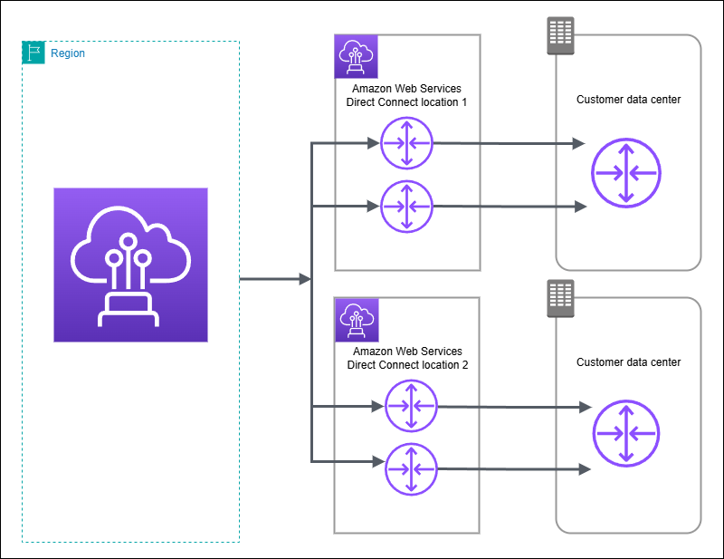
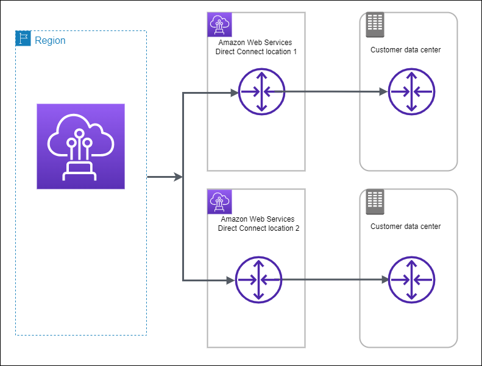
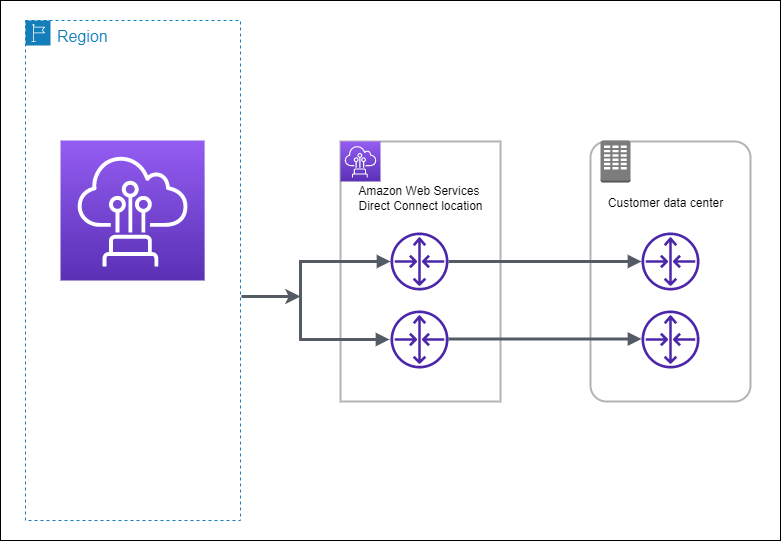

AWS Certified Advanced Networking - Specialty (ANS-C01)
AWS Direct Connect - Introduction and Core Concepts
Introduction to AWS Direct Connect
What is Direct Connect?
Dedicated network connection from your premises to AWS
Uses standard Ethernet fiber-optic cable
Connects your router to AWS Direct Connect router
Bypasses internet service providers
Key Benefits:
Direct access to public AWS services
Direct access to Amazon VPC
Access to AWS services in all public regions through single connection
Dedicated private network path
Core Components
Connections:
Physical network connection at AWS Direct Connect location
Links your network to specific AWS Region
Foundation for Direct Connect service
Virtual Interfaces (VIFs):
Public Virtual Interface:
Access to public AWS services
Example: Amazon S3 access
Private Virtual Interface:
Access to your VPC
Uses private IP addresses
Transit Virtual Interface:
Access to Transit Gateways
Connects multiple VPCs across accounts
Important Concepts
Regional Access:
Each location connects to specific AWS Region
Can access services in all public regions
Works in public regions and AWS GovCloud (US)
Connection Requirements:
Must be at AWS Direct Connect location, or
Work with AWS Direct Connect Partner, or
Use independent service provider
Exam Tips
Key Points:
Direct Connect bypasses internet for AWS access
Three types of virtual interfaces available
Single connection can access all public regions
Physical presence or partner required
Architecture Understanding:
Understand connection path: Your Router → DX Router → AWS
Know different virtual interface types and their uses
Remember regional vs global access capabilities
AWS Direct Connect - Network Requirements
Physical Network Requirements
Fiber Requirements:
Single-mode fiber only
Supported transceivers:
1 GbE: 1000BASE-LX (1310 nm)
10 GbE: 10GBASE-LR (1310 nm)
100 GbE: 100GBASE-LR4
400 GbE: 400GBASE-LR4
Frame Size Support:
Ethernet frame sizes supported:
Frame components:
14 bytes Ethernet header
4 bytes VLAN tag
IP datagram
4 bytes FCS
Technical Requirements
Protocol Support:
BGP (Border Gateway Protocol) required
BGP MD5 authentication support needed
IPv4 and IPv6 supported
802.1Q VLAN encapsulation required end-to-end
Auto-Negotiation Settings:
Above 1 Gbps: Must be disabled
For 1 Gbps: Varies by endpoint
May need enabled or disabled
Check troubleshooting guide if interface is down
Optional Features
BFD (Bidirectional Forwarding Detection):
Can be configured on your network
Asynchronous BFD automatically enabled on AWS side
Only takes effect when configured on your router
MTU Configuration:
Configurable for private virtual interfaces
Configurable for transit virtual interfaces
Location Requirements
Must Meet One of These Conditions:
Colocation with AWS Direct Connect location
Working with AWS Direct Connect APN Partner
Using independent service provider
Exam Tips
Critical Requirements:
Single-mode fiber only
BGP and BGP MD5 authentication support
802.1Q VLAN support end-to-end
Specific auto-negotiation settings by speed
Remember These Points:
Different transceiver requirements by speed
Both IPv4 and IPv6 support
BFD is optional but auto-enabled on AWS side
Location requirements flexibility (three options)
AWS Direct Connect - Virtual Interface Types
Introduction to Virtual Interfaces (VIFs)
Purpose:
Enable specific types of AWS access
Different VIFs for different connectivity needs
Can have multiple VIFs on single Direct Connect
Private Virtual Interface
Primary Use Cases:
Access to Amazon VPC using private IP addresses
Direct connection to VPC resources
Connectivity Options:
Single VPC Connection:
One VPC per private virtual interface
Must be in same Region
Uses private IP addressing
Multiple VPC Connection:
Via Direct Connect gateway
Access multiple virtual private gateways
Works across accounts and Regions
Exception: Not available in AWS China Regions
Public Virtual Interface
Primary Use Cases:
Access to all AWS public services
Uses public IP addresses
Global service access
Key Features:
Connect to all AWS public IP addresses
Access services globally
Direct path to public AWS services
Transit Virtual Interface
Primary Use Cases:
Connect to Transit Gateways
Multi-VPC connectivity
Cross-account access
Key Features:
Connect multiple Transit Gateways
Works across:
Multiple accounts
Multiple AWS Regions
Exception: Not available in AWS China Regions
Important Limitations
Association Limits:
Limits exist for associations between:
Direct Connect gateway
Virtual interfaces
Refer to Direct Connect quotas page for specific limits
Exam Tips
Know the Use Cases:
Private VIF: VPC access with private IPs
Public VIF: AWS public services globally
Transit VIF: Multiple VPCs via Transit Gateway
Remember These Points:
Private VIF can connect to one VPC or many via Direct Connect gateway
Public VIF provides global AWS service access
Transit VIF works across accounts and regions
China Region limitations for certain VIF types
Key Differences:
IP addressing (private vs public)
Scope of access (single VPC vs multiple vs global)
Regional vs cross-region capabilities
AWS Direct Connect Study Guide - Part 5
Topic: Direct Connect Maintenance
Introduction
Service Management:
Fully managed service by AWS
Uses standalone hardware devices
Enables highly resilient network connections
Periodic maintenance required for service reliability
Types of Maintenance
1. Planned Maintenance:
Scheduled in advance
Improves availability
Delivers new features
Notification Schedule:
14 calendar days notice
7 calendar days notice
1 calendar day notice
Note: Calendar days include non-business days and holidays
2. Emergency Maintenance:
Critical service-impacting failures
Requires immediate AWS action
Not planned in advance
Notification: Up to 60 minutes prior
Cannot be canceled
Best Practices
Resiliency Recommendations:
Follow AWS Direct Connect Resiliency Recommendations
Implement redundant Direct Connect connections
Plan for graceful traffic shifting during maintenance
Regular testing of redundant connections
Testing Requirements:
Proactively test redundant connections
Use AWS Direct Connect Failover Test functionality
Verify traffic routing through redundant virtual interfaces
Regular validation of failover processes
Important Considerations
Maintenance Management:
Planned maintenance can be requested for cancellation (with eligibility criteria)
Emergency maintenance cannot be canceled
Maintenance ensures service reliability and new feature delivery
Impact Mitigation:
Design for redundancy
Prepare failover procedures
Regular testing of backup connections
Monitor maintenance notifications
Exam Tips
Key Timelines:
Planned Maintenance: 14, 7, and 1 day notices
Emergency Maintenance: Up to 60-minute notice
Calendar days include all days (business/non-business)
Remember:
Two types of maintenance (Planned vs Emergency)
Emergency maintenance cannot be canceled
Importance of redundancy testing
Failover testing functionality availability
Common Scenarios:
Maintenance notification timelines
Handling maintenance windows
Implementing resilient connections
Testing failover procedures
AWS Direct Connect FAQ Study Guide - Part 1: General Questions
Question
Key Points to Remember
What is AWS Direct Connect?
Private network connection alternative to internet
Data travels through private network instead of internet
Benefits:
Reduced costs
Increased bandwidth
More consistent network experience
Works with all AWS services (EC2, VPC, S3, DynamoDB, etc.)
Where is AWS Direct Connect available?
Available at specific AWS Direct Connect locations
Can connect to:
VPCs in any AWS Region
Any Availability Zone
AWS Local Zones
What is the difference between dedicated and hosted connections?
Dedicated Connection:
1, 10, 100, or 400 Gbps Ethernet port
Dedicated to single customer
Hosted Connection:
Sourced from AWS Direct Connect Partner
Partner maintains network link to AWS
How to get started with AWS Direct Connect?
Use AWS Management Console's Direct Connect tab
Select:
AWS Direct Connect location
Number of ports
Port speed
Optional: Work with Direct Connect Partner for network extension
Can AWS Direct Connect be used without presence at Direct Connect location?
Yes, through Direct Connect Partners
Partners can extend existing network to Direct Connect location
Direct Connect Gateway enables access to any AWS Region (except China)
AWS Direct Connect FAQ Study Guide - Part 2: Definitions
Term
Definition & Key Points
AWS Direct Connect Gateway
A grouping of:
Virtual private gateways (VGWs)
Private virtual interfaces (VIFs)
Globally available resource
Can be created in any Region
Accessible from all other Regions
Virtual Interface (VIF)
Types:
Public VIF: Access to public AWS services (e.g., S3)
Private VIF: Access to your VPC
Required for accessing AWS services
Virtual Private Gateway (VGW)
Part of a VPC
Provides edge routing for:
AWS managed VPN connections
AWS Direct Connect connections
Associates with Direct Connect gateway for VPC connectivity
Link Aggregation Group (LAG)
Logical interface using LACP
Aggregates multiple dedicated connections
Key features:
No extra charge
Uses dynamic LACP bundles
Static LACP not supported
VIFs on different LAGs can connect to same VGW
Supports BFD for improved failover times
AWS Direct Connect Resiliency Toolkit
Connection wizard for resiliency models
Helps determine:
Number of dedicated connections needed
How to achieve SLA objectives
Guides through connection ordering process
Ensures appropriate number of connections in multiple locations
AWS Direct Connect Failover Testing
Tests connection resiliency
Disables BGP session between on-premises and AWS
Available through:
AWS Management Console
Direct Connect API
Supported in all commercial AWS Regions (except GovCloud)
Transit Virtual Interface
Can be created on any Direct Connect connection
Attaches only to Direct Connect gateway
Can interface with up to 6 Transit Gateways
Supports one IPv4 and one IPv6 BGP session
MACsec
IEEE standard (802.1AE)
Provides:
Data confidentiality
Data integrity
Data origin authenticity
Encrypts data between on-premises and Direct Connect PoP
AWS Direct Connect FAQ Study Guide - Part 3: High Availability and Resilience
Question
Key Points to Remember
Does LAG make my connection more resilient?
No - LAG doesn't improve overall resilienceLAG capabilities:
Can protect against single link failure if minimum links set to one
Cannot protect against device failure
Cannot protect against device maintenance
Best Practice: Make connections at multiple Direct Connect locations
How to order connections for high availability?
Follow resiliency best practices:
Use Resiliency Toolkit to choose model
Order redundant connections
Test configurations using Failover Test feature
Recommendations:
Establish second connection for redundancy
Use redundant AWS equipment when requesting multiple ports
Backup Options:
IPsec VPN as backup: Traffic auto-fails over
Without backup: VPC traffic drops during failure
How to verify connections are on different AWS devices?
Check in Connections section:
Steps:
Select desired connections
Look at "General configuration"
Check "AWS logical device"
Different device IDs = Different AWS devices
Failover Test Feature Details
Test Duration:
Minimum: 1 minute
Maximum: 180 minutes
Can be cancelled while running
Test History:
Viewable via Console or CloudTrail
Preserved for 365 days
Deleted if virtual interface is deleted
Test Capabilities:
Works with all virtual interface types
Can test IPv4 and IPv6 BGP sessions
Only VIF owner can initiate tests
What happens after failover test completion?
BGP session is restored
Uses original BGP session parameters
Automatic restoration after configured duration
Does AWS Direct Connect offer an SLA?
Yes - SLA available
Details available in AWS documentation
AWS Direct Connect FAQ Study Guide - Part 4: AWS Direct Connect SiteLink
Question
Key Points to Remember
Connection Requirements for SiteLink
Works with existing Direct Connect connections
Compatible with:
Dedicated connections
Hosted connections
No new connections required
SiteLink Configuration
Configuration Requirements:
Enable on VIFs at two or more Direct Connect locations
All locations must attach to same Direct Connect gateway
Management Options:
AWS Management Console
AWS CLI
APIs
Monitoring: Integrated with CloudWatch
Direct Connect Gateway Requirement
Mandatory requirement
Supported VIF types:
Network Architecture Options
Simple Two-Site:
Configure private VIF at each site
Enable SiteLink on VIFs
Associate with Direct Connect gateway
Hub-and-Spoke:
Single Direct Connect gateway
Associate all SiteLink-enabled private VIFs
Segmented Network:
Multiple Direct Connect gateways
VIFs on different gateways cannot communicate
Technical Specifications
Protocol Requirements:
BGP required
IPv6 supported
MACsec supported (if port/PoP supports it)
QoS Support:
No managed QoS functionality
DSCP markings preserved on forwarded traffic
BGP Communities Support:
7224:7100 - Low preference
7224:7200 - Medium preference
7224:7300 - High preference
SiteLink vs Cloud WAN
Cloud WAN:
Creates/manages VPC networks across regions
SiteLink:
Connects DX locations directly
Bypasses AWS Regions
Improves performance
Can be used together in future
AWS Direct Connect FAQ Study Guide - Part 5: AWS Local Zones
Question
Key Points to Remember
Can Direct Connect reach Local Zones?
Yes - Direct Connect can connect to Local Zones
Data Path:
Direct travel to/from Local Zones
Bypasses AWS Region
Improved performance
Reduced latency
How to Configure Local Zones with Direct Connect
Step 1: Extend VPC from parent Region
Create new subnet
Assign to Local Zone
Step 2: Connection Options
Private Connection: Associate VGW to Direct Connect private VIF or DX Gateway
Public Connection: Use Direct Connect Public VIF with IGW
Key Differences from Regional Connections
Transit Gateway Limitations:
Not supported in Local Zones
Traffic must hairpin through parent Region
Technical Limitations:
MTU size: 1468 (vs 9001 in Regions)*
Single flow limit: ~2.5 Gbps (vs 5 Gbps in Regions)
Ingress routing goes through parent Region first
*Exception: Los Angeles Local Zone not affected by MTU and flow limits
Backup Options
Site-to-Site VPN:
Cannot be used as backup for Local Zone connections
Must use multiple Direct Connect connections for redundancy
Direct Connect Gateway Considerations
Current DXGW Use:
Can use if not associated with Transit Gateway
When New DXGW Needed:
If current DXGW is associated with Transit Gateway
Must create new DXGW for VGW association
Reason:
DXGW associated with Transit Gateway cannot associate with VGW
Transit Gateway not supported in Local Zones
AWS Direct Connect FAQ Study Guide - Part 6: Services Interoperability
Question
Key Points to Remember
Can I use the same connection for VPC and other AWS services?
Yes - Single connection can support multiple services
Configuration Options:
Multiple virtual interfaces on one connection
Public VIF: Access public AWS services (using public IP space)
Private VIF: Access VPC resources (using private IP space)
CloudFront with Direct Connect
Can use Direct Connect for origin fetches if:
Origin is in your data center
Have Direct Connect Public VIF
Import all Anycast routes
Advertise custom origin prefix to AWS
Reference: Check Direct Connect Routing policy for prefix details
AWS GovCloud (US) Ordering
Must use AWS GovCloud (US) Management Console
Cannot order through standard AWS Management Console
Global Accelerator Integration
Question about public endpoint prefixes
Note: Original FAQ appears incomplete on this topic
Note: This section is relatively brief in the FAQs but important for understanding how Direct Connect works with other AWS services.
AWS Direct Connect FAQ Study Guide - Part 7: Link Aggregation Groups (LAG)
Question
Key Points to Remember
LAG Size Limits
1 or 10 Gbps connections: Maximum 4 links
100 or 400 Gbps connections: Maximum 2 links
LAG Operating Mode
Always active/active mode
AWS ports continuously send LACPDUs
Customer side can be:
LACP active mode
LACP passive mode
LAG Configuration Rules
Port Types:
Must use same type ports (can't mix speeds)
Available for 1, 10, 100, and 400 Gbps
Dedicated Connections only (no hosted connections)
Device Requirements:
All ports must be on same AWS device
No multi-chassis LAG support
Managing LAG Connections
Adding Links:
Must request additional port for LAG
If no ports available, must create new LAG
Removing Links:
Possible if minimum links setting allows
Can have single port in LAG
Can convert LAG back to individual ports
Virtual Interface Management:
Can use AssociateVirtualInterface API
Can manage through console
Minimum Links Feature
Definition:
Minimum number of active links needed for bundle to work
Optional setting during creation
Defaults to zero if not selected
Example:
4 ports with minimum links set to 3
Bundle active only with 3+ working links
Bundle inactive with only 2 working links
Technical Limitations
Interface Requirements:
Need matching interfaces on both sides
Example: 4x10 GE needs 4x10 GE on customer side
Cannot use single 40 GE interface for 4x10 GE LACP
Link Properties:
All links treated as equal
No link priority support
MTU can be changed (refer to Jumbo Frame documentation)
AWS Direct Connect FAQ Study Guide - Part 8: Billing
Question
Key Points to Remember
Setup Charges and Commitments
No AWS setup charges
No minimum commitment required
Can cancel anytime
Note: Partner services may have separate terms
Billing Components
Two Main Charges:
Port Hours:
Billed per port-hour consumed
Partial hours billed as full hours
Port owner account charged
Data Transfer:
Billed in same month as usage
Regional Data Transfer Billing
Inter-AZ data transfer:
Billed at regular Regional data transfer rate
Not at Direct Connect rate
Billed in month of usage
Hosted Connection Billing
Port Hour Billing:
Starts when connection is accepted
Continues until connection is cancelled
Must work with Partner to cancel
Billing Format:
Grouped by capacity at each location
Example: "HCPortUsage:200M" for 200 Mbps connections
Data Transfer Charges for Virtual Interfaces
Public Virtual Interface:
Charged to resource owner if:
Using public AWS resources
Same AWS payer account
Prefixes advertised via Direct Connect
Private/Transit Virtual Interface:
Private VIF: Resource owner pays
Transit VIF: VPC owner pays
Additional Transit Gateway charges may apply
Consolidated Billing
Data transfer usage aggregated to management account
Service Cancellation
AWS Steps:
Delete ports from Management Console
Additional Steps:
Cancel third-party services
Cancel colocation cross-connects
Cancel network provider services
AWS Direct Connect FAQ Study Guide - Part 9: Specifications
Question
Key Points to Remember
Available Connection Speeds
Dedicated Connections:
1 Gbps
10 Gbps
100 Gbps
400 Gbps
Hosted Connections:
50 Mbps to 10 Gbps
Specific options: 50M, 100M, 200M, 300M, 400M, 500M, 1G, 2G, 5G, 10G, 25G
Available through approved Partners
Data Transfer Limits
No data transfer limits
Can transfer up to port capacity
Route Advertisement Limits
Maximum 100 routes per BGP session
Exceeding Limit:
BGP session goes down
All traffic stops
Must reduce routes to under 100 to restore
Technical Requirements
Connection Types:
1000BASE-LX
10GBASE-LR
100GBASE-LR4
400GBASE-LR4
Required Support:
Single mode fiber
Ethernet transport
802.1Q VLANs
VLAN Extension to AWS
Cannot extend your VLAN to AWS Cloud
VLANs only used to separate virtual interface traffic
Public Service Connection Requirements
BGP Requirements:
Need ASN (public or private)
Public ASN must be owned by you
Private ASN range: 64512 to 65535
Additional Requirements:
New unused VLAN tag
Public IPs (/31 or /30)
RFC 3021 supported
IP Addressing for Virtual Interfaces
Public Virtual Interface:
Must use public IP space you own
VPC Virtual Interface:
AWS can auto-generate peer IP CIDR
Uses 169.254.0.0/16 range
Hardware Location and BFD
Hardware Location:
Can purchase rack space near DX facility
Cannot place in AWS DX rack/cage areas
BFD Configuration:
Automatically enabled on virtual interfaces
Must configure on customer router
Minimum interval: 300
Detection multiplier: 3
AWS Direct Connect FAQ Study Guide - Part 10: VPN Connections
Question
Key Points to Remember
Direct Connect vs IPsec VPN Differences
VPN Characteristics:
Uses IPsec encryption
Connects over public internet
Quick to configure (minutes)
Best for:
Immediate needs
Low-moderate bandwidth
Can tolerate internet variability
Direct Connect Characteristics:
Bypasses internet
Uses dedicated private connections
More consistent performance
Higher bandwidth options
Using Direct Connect and VPN Together
Can be used simultaneously for failover
Traffic Routing:
Direct Connect path always preferred when available
Preference applies regardless of AS path prepending
Important Consideration:
Ensure VPN can handle failover traffic volume from Direct Connect
BGP Configuration Differences
VPN BGP works same as Direct Connect BGP
No configuration differences
VPN Technical Limitations
IPv6 Limitations:
Only IPv4 BGP sessions supported over VPN tunnel
Cannot terminate tunnel to IPv6 endpoint
Cannot run IPv6 BGP over IPv4 tunnel
Tunnel Configuration:
Single VPN tunnel supports one v4 BGP session
IPv4 endpoint addresses only
Key Takeaway: While Direct Connect and VPN can work together, they serve different purposes and have different capabilities. Direct Connect provides dedicated, consistent connectivity while VPN offers quick, flexible connectivity over the internet.
AWS Direct Connect FAQ Study Guide - Part 11: AWS Transit Gateway Support
Question
Key Points to Remember
Regional Availability
Available in all commercial AWS Regions
Transit Virtual Interface Rules
Creation:
Can use AWS Console or API
Can be allocated to any AWS account
Attachment Rules:
Cannot attach to Virtual Private Gateway
Private VIF cannot attach to Transit Gateway
Direct Connect Gateway Limitations
Virtual Interface Type Restrictions:
Can only have one type of VIF attached
Cannot mix private and transit VIFs
Transit Gateway Association:
Cannot associate Transit Gateway with DX gateway attached to private VIF
Takes up to 40 minutes to establish association
Connection Limits and Capabilities
Virtual Interface Limits:
51 VIFs per connection for:
1 Gbps
10 Gbps
100 Gbps
400 Gbps dedicated connections
LAG Configuration:
4x10 Gbps LAG supports 4 transit VIFs
Hosted Connections:
Transit VIF supported on all speeds
Technical Features
MTU Support:
Supports jumbo frames
Maximum MTU size: 8,500
BGP Attributes:
Supports same attributes as private VIF:
AS_PATH
Local Pref
NO_EXPORT
Key Takeaway: Transit Gateway support with Direct Connect provides flexible connectivity options but comes with specific limitations and configuration requirements that must be understood for proper implementation.
AWS Direct Connect FAQ Study Guide - Part 12: AWS Direct Connect Gateway
Question
Key Points to Remember
Purpose and Functions
Key Functions:
Enables access to VPCs in any Region (except China)
Share private VIF with up to 20 VPCs
Connect multiple Transit Gateways through transit VIF
Associate multiple VGWs (if VPC CIDRs don't overlap)
Benefits:
Reduces number of BGP sessions needed
Enables multi-Region connectivity
Simplifies network management
Transit Gateway Association
Limits:
Up to 3 Transit Gateways per DX gateway
No overlapping IP CIDRs allowed
Cross-Account Support:
Can associate Transit Gateways from any AWS account
Can associate VPCs from any AWS account
Traffic Routing and Costs
Traffic Path:
Takes shortest path to destination Region
Doesn't route through home Region
Costs:
No charge for DX gateway itself
Pay for egress data based on source Region
Standard port hour charges apply
Account Requirements
Same Account Required:
Private VIFs and DX gateway
Transit VIFs and DX gateway
Different Account Allowed:
Virtual private gateways
Transit Gateways
VPC Feature Compatibility
Supported Features:
Elastic File System
Elastic Load Balancing
Application Load Balancer
Security Groups
Access Control List
AWS PrivateLink
Unsupported Features:
VPN CloudHub functionality
AWS Classic VPN
AWS VPN (edge-to-edge routing)
VPC peering
VPC endpoints
Important Limitations
VGW Restrictions:
VGW-VPC pair can only be in one DX gateway
Must be attached to VPC to associate with DX gateway
VIF Restrictions:
One private VIF can only attach to one DX gateway OR one VGW
Cannot move existing private VIF to DX gateway
Traffic Patterns:
No VPC-to-VPC traffic through DX gateway
No VPN-to-VIF traffic through DX gateway
Key Takeaway: Direct Connect Gateway is a crucial component for multi-Region and multi-account connectivity, but requires careful planning due to its specific limitations and requirements.
AWS Direct Connect FAQ Study Guide - Part 13: Local Preference Communities
Question
Key Points to Remember
Supported BGP Sessions and Interfaces
Compatibility:
Works with existing EBGP sessions
Available only for private and transit virtual interfaces
Not available for public virtual interfaces
Direct Connect Gateway:
Compatible with private VIFs attached to DX gateway
Supported Communities and Preferences
Community Values (Evaluated Low to High):
7224:7100 - Low Preference
7224:7200 - Medium Preference
7224:7300 - High Preference
Important Rules:
Communities are mutually exclusive
Multi-pathing possible when prefixes have:
Same communities
Identical MED
Identical AS_PATH attributes
Default Behavior
Without Communities:
Based on distance to DX locations from local Region
Egress behavior may be arbitrary across multiple VIFs
Use Cases and Scenarios
Traffic Management:
Can influence traffic between VIFs on same physical connection
Supports failover configurations
Practical Example:
10 Gbps preferred over 1 Gbps connection:
Mark 10 Gbps with higher preference
1 Gbps becomes backup path
Compatibility with Existing Configurations
AS_PATH Configuration:
Can coexist with existing AS_PATH configurations
No disruption needed
Local preference evaluated before AS_PATH
Multipathing:
Up to 16 next-hops per prefix
Each next-hop must be unique AWS endpoint
Monitoring and Verification
Limitations:
Cannot verify if communities are being received by AWS
No monitoring features available for community verification
Key Takeaway: Local preference communities provide granular control over traffic routing in Direct Connect, particularly useful for implementing failover and traffic engineering strategies.
AWS Direct Connect FAQ Study Guide - Part 14: MACsec
Question
Key Points to Remember
Role and Purpose
Relationship with Other Encryption:
Not a replacement for existing encryption
Should be used alongside existing encryption
Provides additional layer of security
Best Practice:
Continue using current encryption technologies
Use MACsec as additional security layer
Connection Support and Requirements
Supported Connections:
10 Gbps dedicated connections
100 Gbps dedicated connections
400 Gbps dedicated connections
Not Supported:
1 Gbps dedicated connections
Any hosted connections
Requirements:
Connection must be Layer 2 transparent
Device must support MACsec at termination point
Check last-mile partner compatibility
Hardware and Implementation
Hardware Requirements:
MACsec-capable device needed at customer end
Must verify connection terminates on MACsec-capable AWS device
Verification Methods:
Check via AWS Management Console
Use DescribeConnections API
Technical Specifications
Cipher Suites:
100/400 Gbps: GCM-AES-XPN-256 only
10 Gbps: Supports both:
GCM-AES-256
GCM-AES-XPN-256
Key Requirements:
Only 256-bit keys supported
Provides advanced data protection
Extended Packet Numbering (XPN)
Requirements:
Mandatory for 100/400 Gbps connections
Optional for 10 Gbps connections
Purpose:
Extends numbering space to 64-bits
Reduces key rotation frequency
Prevents packet numbering exhaustion
Additional Features and Costs
SCI (Secure Channel Identifier):
Required to be on
Cannot be changed
VLAN Tag Handling:
No support for dot1q-in-clear
Cannot move VLAN tag outside encrypted payload
Cost:
No additional charge for MACsec
Key Takeaway: MACsec provides an additional layer of security for Direct Connect connections, with specific requirements for speed, hardware, and cipher suites. It's a free feature but requires careful planning for implementation.
AWS Direct Connect FAQ Study Guide - Part 15: Maintenance Events
Question
Key Points to Remember
Maintenance Notification Timeline
Scheduled Maintenance:
14 calendar days notice
7 calendar days notice
1 calendar day notice
Emergency Maintenance:
Can occur at any time
Up to 60-minute notification
Depends on maintenance nature
Notification Methods
Available Channels:
AWS Personal Health Dashboard
Email notifications
AWS Direct Connect Console subscriptions
Maintenance Scheduling
Schedule Characteristics:
Spread across all days of week
Cannot be limited to nights/weekends due to global scale
Performed per device (e.g., dxcon-xxxxxx)
Best Practice:
Follow AWS resiliency recommendations
Set up resilient network connections
Preparing for Maintenance
Potential Downtime:
Preparation Options:
Request redundant Direct Connect connection
Configure AWS Site-to-Site VPN as backup
Shift traffic to another circuit before maintenance
Testing:
Use Resiliency Toolkit for failover testing
Verify connection resilience before maintenance
Multiple Connection Maintenance
With Proper Setup:
Redundant connections maintained at different times
Maintenance scheduling algorithm detects redundant setup
Exception:
All connections on same AWS logical device affected simultaneously
Partner Maintenance Coordination
AWS Coordination:
Partners receive AWS maintenance notifications
AWS has no visibility into partner maintenance
Best Practice:
Check with partners for their maintenance schedules
Consider using different partners in different locations
Helps minimize overlapping maintenance windows
Key Takeaway: Proper planning for maintenance events is crucial. Implement redundancy and have clear procedures for maintenance windows to ensure continuous connectivity.
Domain 1: Network Design - Detailed Breakdown
Topic
What You Need to Know
Direct Connect with Redundant Connections
Connection Types and Speeds:
Dedicated: 1, 10, 100, 400 Gbps
Hosted: 50 Mbps to 10 Gbps
Resiliency Models:
Maximum Resiliency: Separate connections to separate DX locations
High Resiliency: Separate connections to same DX location
Development/Test: Single connection
Failover Options:
DX to DX failover
DX to VPN failover (know VPN limitations)
Active/Active vs Active/Passive configurations
BGP Routing and Traffic Control
BGP Session Requirements:
Customer ASN: Public or Private (64512-65535)
AWS ASN: Always 64512 unless specified
Maximum 100 prefixes per BGP session
Traffic Control Methods:
Local Preference Communities:
7224:7100 - Low Preference
7224:7200 - Medium Preference
7224:7300 - High Preference
AS Path Prepending
BFD Support:
Minimum interval: 300ms
Multiplier: 3
Transit Gateway Integration
Transit Virtual Interface (VIF) Specifics:
Maximum 3 Transit Gateways per DX Gateway
No overlapping CIDRs allowed
MTU size limited to 8,500 bytes
Key Limitations:
Cannot mix Transit and Private VIFs on same DX Gateway
Up to 40 minutes for TGW association
51 VIFs maximum per DX connection
Multi-Account/Region Design
Direct Connect Gateway Capabilities:
Up to 20 VPCs per DX Gateway
No overlapping VPC CIDRs allowed
Global resource - create in any region
Account Requirements:
VIFs must be in same account as DX Gateway
VPCs can be in any account
Transit Gateways can be in any account
Traffic Flow:
Takes shortest path to destination region
No transit through home region required
Cannot route between VPCs through DX Gateway
Key Exam Tips for Domain 1:
Know the specific numbers and limits for each component
Understand how to design for different resiliency requirements
Be able to explain traffic flow patterns in multi-account/region scenarios
Know BGP configuration options and their effects on routing
Understand integration limitations between services
Domain 2: Network Implementation - Detailed Breakdown
Topic
What You Need to Know
Physical Layer Requirements
Fiber Requirements:
Single-mode fiber only
1000BASE-LX (1310 nm) for 1 Gbps
10GBASE-LR (1310 nm) for 10 Gbps
100GBASE-LR4 for 100 Gbps
400GBASE-LR4 for 400 Gbps
Auto-Negotiation Settings:
Must be disabled for connections > 1 Gbps
For 1 Gbps: Check endpoint requirements
LAG Configuration:
Maximum 4 connections for 1/10 Gbps
Maximum 2 connections for 100/400 Gbps
All ports must be same speed
Must be on same AWS device
Protocol Configuration
BGP Requirements:
MD5 authentication required
Maximum 100 prefixes per session
Supports IPv4 and IPv6
ASN Requirements:
Private ASN range: 64512-65534
Public ASN must be owned by you
32-bit ASN range: 4200000000-4294967294
VLAN Configuration:
802.1Q tagging required
One VLAN per virtual interface
VLAN range: 1-4094
BFD Configuration:
Automatically enabled on AWS side
Must configure on customer router
Minimum interval: 300ms
Multiplier: 3
Virtual Interface Setup
Public VIF:
Requires public IP addresses you own
Access to all AWS public services
Must advertise valid public prefixes
/31 or /30 for BGP peering
Private VIF:
Uses private IP addressing
One VPC per VIF (without DX Gateway)
AWS can auto-assign IPs (169.254.0.0/16)
Supports jumbo frames (9001 MTU)
Transit VIF:
Connects to Transit Gateway only
Maximum MTU: 8,500 bytes
Supports one IPv4 and one IPv6 BGP session
51 VIFs per connection maximum
Implementation Timelines
Connection Provisioning:
New connection: Up to 72 hours
Cross-connect: Varies by facility
VIF activation: Minutes once configured
Integration Timelines:
DX Gateway to Transit Gateway: Up to 40 minutes
BGP session establishment: Minutes
LAG creation: Minutes
Key Exam Tips for Domain 2:
Memorize the physical specifications for different connection speeds
Know the BGP configuration requirements and limitations
Understand the differences between VIF types and their specific requirements
Be familiar with implementation timelines for different components
Know how to troubleshoot common implementation issues
Domain 3: Network Management and Operation - Detailed Breakdown
Topic
What You Need to Know
Monitoring and Metrics
CloudWatch Metrics:
Connection State: Up/Down
Connection BPS (Bits per second):
Inbound/Outbound bytes
5-minute intervals
Connection PPS (Packets per second)
Connection Light Level (dBm)
BGP Monitoring:
BGP connection status
Number of routes advertised
Number of routes received
BGP peer status
Maintenance Management
Scheduled Maintenance:
Notification Timeline:
14 calendar days notice
7 calendar days notice
1 calendar day notice
Duration: Few minutes to few hours
Emergency Maintenance:
Up to 60-minute notification
Cannot be canceled
Immediate action required
Impact Management:
Per device maintenance
Different times for redundant connections
All connections on same device affected simultaneously
Troubleshooting and Recovery
Connection Issues:
Light Levels:
Normal range: -10 to -3 dBm
Warning: Below -10 dBm
BGP Session Problems:
ASN mismatch
MD5 authentication failure
Route limit exceeded (>100)
Recovery Times:
BGP reconvergence: 3-5 minutes
LAG member failure: Under 1 minute
Full connection failure: Based on failover design
Performance Optimization
MTU Configuration:
Private VIF: Up to 9001 bytes
Transit VIF: Up to 8500 bytes
Public VIF: 1500 bytes
LAG Optimization:
Minimum links setting
LACP active/active mode
Equal cost load sharing
Traffic Engineering:
BGP Communities for path preference
AS Path prepending
Load balancing across connections
Failover Testing
Test Parameters:
Duration: 1-180 minutes
Can be cancelled while running
Test history preserved for 365 days
Test Types:
Single connection failover
LAG member failover
Full site failover
Verification:
BGP route propagation
Application connectivity
Failback behavior
Key Exam Tips for Domain 3:
Know all CloudWatch metrics available for Direct Connect
Understand maintenance types and notification periods
Be able to troubleshoot common connection and BGP issues
Know performance optimization techniques and their use cases
Understand failover testing procedures and capabilities
Domain 4: Network Security, Compliance, and Governance - Detailed Breakdown
Topic
What You Need to Know
MACsec Encryption
Supported Connections:
10 Gbps dedicated connections
100 Gbps dedicated connections
400 Gbps dedicated connections
Not supported: 1 Gbps and hosted connections
Cipher Suites:
100/400 Gbps: GCM-AES-XPN-256 only
10 Gbps: Supports both:
GCM-AES-256
GCM-AES-XPN-256
Requirements:
Layer 2 transparent connection
MACsec-capable customer device
SCI (Secure Channel Identifier) must be on
256-bit keys only
Authentication and Authorization
BGP Security:
MD5 authentication mandatory
ASN validation for public ASNs
Route prefix filtering
IAM Controls:
Connection creation/deletion
VIF management
LAG management
Cross-account access
Resource Policies:
DX Gateway associations
VIF permissions
Transit Gateway attachments
Monitoring and Logging
CloudWatch Integration:
Connection metrics
VIF metrics
LAG metrics
Light level monitoring
CloudTrail Logging:
API activity logging
Resource configuration changes
Security-related events
Alarms and Notifications:
Connection state changes
BGP state changes
Light level thresholds
Maintenance events
Compliance Requirements
SLA Specifications:
99.99% availability (dedicated connections)
Monthly uptime measurement
Region-specific calculations
Resiliency Models:
Maximum Resiliency:
Multiple connections
Multiple locations
99.99% SLA
High Resiliency:
Multiple connections
Single location
99.9% SLA
Documentation Requirements:
LOA-CFA (Letter of Authorization)
Maintenance notifications
Incident reports
Configuration changes
Security Best Practices
Network Isolation:
Separate public/private traffic
Use private VIFs for VPC access
Implement route filtering
Encryption:
MACsec where supported
IPsec over Direct Connect
TLS for application traffic
Access Control:
Least privilege principle
Resource-based policies
Network ACLs and security groups
Key Exam Tips for Domain 4:
Know MACsec requirements and limitations in detail
Understand authentication mechanisms at different layers
Be familiar with monitoring and logging capabilities
Know SLA levels for different resiliency models
Understand security best practices and their implementation
AWS Direct Connect Feature Comparisons
1. Connection Types Comparison
Feature
Dedicated Connection
Hosted Connection
Available Speeds
1, 10, 100, 400 Gbps
50 Mbps to 10 Gbps
Ordering Process
Direct from AWS
Through AWS Partner
Port Dedication
Dedicated port
Shared port
LAG Support
Yes
No
MACsec Support
Yes (≥10 Gbps)
No
SLA Available
Yes
Varies by partner
2. Virtual Interface Types Comparison
Feature
Private VIF
Public VIF
Transit VIF
Primary Use
VPC Access
AWS Public Services
Transit Gateway Access
IP Addressing
Private IPs (RFC 1918)
Public IPs only
Private IPs (RFC 1918)
Maximum MTU
9001 bytes
1500 bytes
8500 bytes
BGP Support
IPv4/IPv6
IPv4/IPv6
IPv4/IPv6
Route Limits
100 prefixes
100 prefixes
100 prefixes
DX Gateway Support
Yes
No
Yes
3. Resiliency Model Comparison
Feature
Maximum Resiliency
High Resiliency
Development/Test
Connections
Multiple
Multiple
Single
Locations
Multiple
Single
Single
SLA
99.99%
99.9%
99%
Failover
Automatic
Automatic
None
Use Case
Production/Critical
Production
Non-critical
4. LAG Configuration Comparison
Feature
1/10 Gbps LAG
100/400 Gbps LAG
Maximum Links
4 connections
2 connections
Speed Requirements
All links same speed
All links same speed
Location Requirement
Same AWS device
Same AWS device
LACP Mode
Active only (AWS side)
Active only (AWS side)
Minimum Links
Configurable (0-4)
Configurable (0-2)
AWS Gateway Types and Capabilities Comparison
1. Direct Connect Gateway vs Virtual Private Gateway Comparison
Feature
Direct Connect Gateway
Virtual Private Gateway
Primary Use
Global resource for multi-region/VPC connectivity
Single VPC connectivity
Regional Scope
Global (all regions except China)
Regional only
VPC Limit
Up to 20 VPCs
1 VPC
Cross-Region Support
Yes
No
VIF Association
Private or Transit VIF (not both)
Private VIF only
Transit Gateway Association
Up to 3 Transit Gateways
Not supported
2. Gateway Association Capabilities
Feature
DX Gateway with Private VIF
DX Gateway with Transit VIF
Maximum Associations
20 VGWs
3 Transit Gateways
Cross-Account Support
Yes (VPCs in different accounts)
Yes (TGWs in different accounts)
CIDR Overlap
Not allowed between VPCs
Not allowed between TGWs
Association Time
Minutes
Up to 40 minutes
Bandwidth
Limited by DX connection
Limited by DX connection
3. Gateway Feature Support Matrix
Feature
DX Gateway
Virtual Private Gateway
Transit Gateway
VPC Peering Support
No
Yes
Yes
VPN Support
No
Yes
Yes
Route Table Management
No (uses BGP)
Yes
Yes
BGP Support
Yes
Yes
Yes
IPv6 Support
Yes
Yes
Yes
4. Gateway Integration Limitations
Scenario
Limitation
Workaround
DX Gateway with mixed VIF types
Cannot mix Private and Transit VIFs
Use separate DX Gateways
VGW multi-attachment
VGW can only attach to one DX Gateway
Use Transit Gateway instead
TGW with Private VIF
Cannot directly connect
Use Transit VIF instead
VPC-to-VPC through DX Gateway
No direct routing between VPCs
Use Transit Gateway or VPC peering
Public Service Access
Not supported through DX Gateway
Use Public VIF directly
Key Exam Tips:
Remember the key differences between gateway types and their use cases
Know the association limits for each gateway type
Understand which gateway to use for specific connectivity requirements
Be familiar with common limitations and their workarounds
Know the integration capabilities between different gateway types
AWS Gateway Types and Capabilities Comparison
1. Direct Connect Gateway vs Virtual Private Gateway Comparison
Feature
Direct Connect Gateway
Virtual Private Gateway
Primary Use
Global resource for multi-region/VPC connectivity
Single VPC connectivity
Regional Scope
Global (all regions except China)
Regional only
VPC Limit
Up to 20 VPCs
1 VPC
Cross-Region Support
Yes
No
VIF Association
Private or Transit VIF (not both)
Private VIF only
Transit Gateway Association
Up to 3 Transit Gateways
Not supported
2. Gateway Association Capabilities
Feature
DX Gateway with Private VIF
DX Gateway with Transit VIF
Maximum Associations
20 VGWs
3 Transit Gateways
Cross-Account Support
Yes (VPCs in different accounts)
Yes (TGWs in different accounts)
CIDR Overlap
Not allowed between VPCs
Not allowed between TGWs
Association Time
Minutes
Up to 40 minutes
Bandwidth
Limited by DX connection
Limited by DX connection
3. Gateway Feature Support Matrix
Feature
DX Gateway
Virtual Private Gateway
Transit Gateway
VPC Peering Support
No
Yes
Yes
VPN Support
No
Yes
Yes
Route Table Management
No (uses BGP)
Yes
Yes
BGP Support
Yes
Yes
Yes
IPv6 Support
Yes
Yes
Yes
4. Gateway Integration Limitations
Scenario
Limitation
Workaround
DX Gateway with mixed VIF types
Cannot mix Private and Transit VIFs
Use separate DX Gateways
VGW multi-attachment
VGW can only attach to one DX Gateway
Use Transit Gateway instead
TGW with Private VIF
Cannot directly connect
Use Transit VIF instead
VPC-to-VPC through DX Gateway
No direct routing between VPCs
Use Transit Gateway or VPC peering
Public Service Access
Not supported through DX Gateway
Use Public VIF directly
Key Exam Tips:
Remember the key differences between gateway types and their use cases
Know the association limits for each gateway type
Understand which gateway to use for specific connectivity requirements
Be familiar with common limitations and their workarounds
Know the integration capabilities between different gateway types
AWS Direct Connect Remote Region Access Study Guide
Topic
Key Points to Remember
Global Access Capabilities
Geographical Scope:
Access to all public Regions from any DX location
Includes AWS GovCloud (US)
Excludes China Regions (Beijing and Ningxia)
Traffic Path:
Uses AWS global network backbone
Applies to both public services and VPC access
No internet transit required
Remote Public Service Access
Requirements:
Public virtual interface
Established BGP session
Routing:
Router learns routes for all public AWS Regions
Uses AWS IP Address Ranges (published in AWS documentation)
BGP advertisement for public prefixes
Remote VPC Access
Primary Method - Direct Connect Gateway:
Can be created in any public Region
Uses private virtual interface
Connects to VPCs in any Region
Can connect to Transit Gateway
Alternative Method - VPN Over Public VIF:
Create public virtual interface
Establish VPN connection to remote VPC
Uses standard VPC VPN connectivity options
Billing Considerations
Data Transfer Charges:
Outbound data from remote Region charged at that Region's rate
Separate from DX port charges
Check pricing on AWS Direct Connect detail page
Network-to-VPC Connectivity
Integration Options:
Direct Connect Gateway for multi-Region access
VPN over Direct Connect
Hybrid connectivity solutions
Use Cases:
Integrating on-premises services with AWS
Multi-Region application deployment
Global network architecture
Exam Tips:
Know the geographical limitations (especially China Region exclusion)
Understand the two methods for remote VPC access:
DX Gateway (preferred for production)
VPN over public VIF (alternative)
Remember that all traffic stays on AWS backbone
Understand billing implications for remote Region access
Know the requirements for public service access (public VIF + BGP)
AWS Direct Connect Remote Access Methods Comparison
1. Primary Remote Access Methods Comparison
Feature
DX Gateway with Private VIF
Public VIF Direct Access
VPN over Public VIF
Primary Use Case
Production VPC access across regions
AWS public service access
Backup or temporary VPC access
Security
Private network only
Public routing
IPsec encryption
Scalability
Up to 20 VPCs
All public services
Limited by VPN capacity
Latency
Lowest (direct AWS backbone)
Low (AWS backbone)
Higher (VPN overhead)
Setup Complexity
Medium
Low
High
2. Technical Requirements Comparison
Requirement
DX Gateway with Private VIF
Public VIF Direct Access
VPN over Public VIF
BGP Support
Required
Required
Optional (static routes possible)
IP Addressing
Private IPs only
Public IPs only
Both private and public
CIDR Restrictions
No overlapping VPC CIDRs
None
No overlapping VPN CIDRs
MTU Size
Up to 9001 bytes
1500 bytes
1500 bytes
3. Feature Support Comparison
Feature
DX Gateway with Private VIF
Public VIF Direct Access
VPN over Public VIF
Cross-Account Support
Yes
N/A
Yes
Transit Gateway Integration
Yes (with Transit VIF)
No
Yes
Route Propagation
Automatic via BGP
Automatic via BGP
Manual or BGP
Failover Support
Automatic with redundant DX
Automatic with redundant DX
Manual or BGP based
4. Cost and Performance Comparison
Aspect
DX Gateway with Private VIF
Public VIF Direct Access
VPN over Public VIF
Data Transfer Costs
DX rate + remote region rate
DX rate + remote region rate
DX rate + VPN + remote region rate
Additional Service Costs
None
None
VPN Connection charges
Performance
Full DX bandwidth
Full DX bandwidth
Limited by VPN capacity
Bandwidth Guarantees
Yes
Yes
No
Key Decision Factors:
Security requirements (private vs public connectivity)
Scale of deployment (number of VPCs/regions)
Performance requirements (latency, bandwidth)
Cost considerations
Operational complexity tolerance
AWS Direct Connect Routing Policies and BGP Communities Study Guide
1. Public Virtual Interface Routing Policies
Direction
Policy Type
Key Requirements/Behaviors
Inbound (to AWS)
Prefix Requirements
Must own public prefixes
Must be registered with regional internet registry
Traffic must target Amazon public prefixes
No transitive routing between connections
Source validation against advertised prefix
Outbound (from AWS)
Routing Behavior
Uses AS_PATH and Longest Prefix Match
Advertises all local and remote AWS Region prefixes
Minimum path length of 3
Uses NO_EXPORT BGP community
Home Region priority for identical prefixes
2. BGP Communities for Public Virtual Interfaces
Community Tag
Purpose
Scope
7224:9100
Local AWS Regions
Region-specific
7224:9200
Continental Regions
North America, Asia Pacific, or EMEA
7224:9300
Global
All public AWS Regions
7224:8100
Same Region Routes
Routes from same AWS Region as DX PoP
7224:8200
Same Continent Routes
Routes from same continent as DX PoP
3. Private/Transit Virtual Interface Routing Policies
Priority
Routing Method
Usage
1
Longest Prefix Match
Best for active/passive with different prefix lengths
2
Local Preference
Best for active/passive with same prefix lengths
3
AS_PATH Length
Used when prefix length and local preference are same
4
MED
Lowest priority, not recommended
4. Local Preference BGP Communities
Community Tag
Preference Level
Use Case
7224:7100
Low Preference
Backup/passive paths
7224:7200
Medium Preference
Default/standard paths
7224:7300
High Preference
Primary/active paths
Key Exam Tips:
Remember BGP community numbers and their purposes
Understand routing policy evaluation order
Know how to implement active/passive configurations
Understand scope-based routing with BGP communities
Remember that local preference is evaluated before AS_PATH
AWS Direct Connect Resiliency Toolkit - Introduction and Benefits
Topic
Key Points
Purpose
Helps achieve highly resilient network connections between:
Amazon VPC
On-premises infrastructure
Provides connection wizard with multiple resiliency models
Guides through dedicated connection ordering process
Key Benefits
Connection Management:
Guidance on redundant connections
Ensures consistent connection speeds
Automatic connection naming
Automation:
Automatic connection approval for existing accounts
Immediate LOA availability
Automatic support ticket creation for new customers
Configuration:
Creates and manages LAGs
Prevents same-device termination
Provides failover testing capabilities
Monitoring:
CloudWatch metrics integration
Connection monitoring
Virtual interface monitoring
Available Resiliency Models
Maximum Resiliency:
99.99% SLA
Highest level of redundancy
High Resiliency:
99.9% SLA
Strong redundancy option
Development and Test:
For non-critical workloads
Separate connections on separate devices
Classic:
For existing connections
No SLA provided
Exam Tips:
Know the SLA levels for each resiliency model
Understand the key benefits of the Resiliency Toolkit
Remember the automation features available
Know when to use each resiliency model
Understand the monitoring capabilities
AWS Direct Connect Resiliency Toolkit - Prerequisites and Technical Requirements
Category
Requirements
Port Speed and Fiber Requirements
Single-mode fiber with specific transceivers:
1 Gbps: 1000BASE-LX (1310 nm)
10 Gbps: 10GBASE-LR (1310 nm)
100 Gbps: 100GBASE-LR4
400 Gbps: 400GBASE-LR4
Connection Types and Speeds
Dedicated Connections:
Available speeds: 1, 10, 100, 400 Gbps
Works with any network provider
Direct AWS partnership not required
Hosted Connections:
Speeds: 50 Mbps to 25 Gbps
Specific options: 50M, 100M, 200M, 300M, 400M, 500M, 1G, 2G, 5G, 10G, 25G
Requires AWS Direct Connect Partner
Technical Network Requirements
Auto-negotiation Settings:
Must be disabled for speeds > 1 Gbps
For 1 Gbps: Check endpoint requirements
Protocol Support:
802.1Q VLAN encapsulation required end-to-end
BGP support required
BGP MD5 authentication support required
Optional Features:
BFD (Bidirectional Forwarding Detection)
Automatically enabled on AWS side
Must be configured on customer router
Pre-Configuration Information Needed
Selected resiliency model
Connection details:
Speed requirements
Location preferences
Partner selection
Note: Speed needed for only one connection initially
Key Exam Tips:
Remember the specific transceiver requirements for each speed
Know the differences between dedicated and hosted connections
Understand auto-negotiation requirements
Remember mandatory protocol support requirements:
802.1Q VLAN
BGP
BGP MD5 authentication
Know that BFD is optional but automatically enabled on AWS side
AWS Direct Connect Resiliency Models Comparison

Figure: Direct Connect Resiliency MAX

Figure: Direct Connect Resiliency HIGH

Figure: Direct Connect Resiliency DEV
Feature
Maximum Resiliency
High Resiliency
Development and Test
Classic
SLA Level
99.99%
99.9%
No specific SLA
No SLA
Location Requirements
Multiple locations
Separate devices
Multiple locations
Two single connections
Single location
Separate devices
Any location
For existing connections
Protection Against
Device failures
Connectivity failures
Complete location failures
Fiber cuts
Device failures
Partial location failures
Device failures only
No location failure protection
Varies based on setup
No guaranteed protection
Use Case
Mission-critical workloads
Highest availability needs
Enterprise production
Critical workloads
High availability needs
Production systems
Non-critical workloads
Development environments
Testing environments
Adding to existing setup
Legacy configurations
Configuration
Multiple connections per location
Multiple locations required
Can have connections to different locations from each data center
Two single connections
Multiple locations
Less complex than maximum
Separate connections
Single location
Separate devices
Flexible configuration
Based on existing setup
Best For
Financial services
Healthcare
Enterprise mission-critical
Business-critical apps
Production workloads
Regional services
Development teams
Testing environments
Non-production workloads
Existing DX customers
Incremental additions
Key Exam Tips:
Know the SLA differences between models
Understand location requirements for each model
Remember what each model protects against
Know appropriate use cases for each model
Understand configuration requirements
Remember that Classic model is for existing connections
AWS Direct Connect Failover Test Capabilities
Topic
Details
Purpose and Overview
Verify traffic routing behavior
Validate resiliency requirements
Test failover scenarios without physical disconnection
Part of Resiliency Toolkit verification process
Test Configuration
Duration Settings:
Minimum: 1 minute
Maximum: 180 minutes (3 hours)
Can be cancelled while running
Test Scope:
Any virtual interface type
IPv4 BGP sessions
IPv6 BGP sessions
Single or multiple BGP sessions
Test Process
Pre-Test:
Verify connection status
Confirm redundant paths
Check BGP session status
During Test:
AWS disables BGP peering session
Traffic routes to redundant interfaces
Monitor failover behavior
Post-Test:
Automatic BGP session restoration
Return to original configuration
Test results available in history
Test History and Monitoring
History Retention:
Preserved for 365 days
Deleted if VIF is removed
Available through Console and CloudTrail
Monitoring Options:
CloudWatch metrics
BGP session status
Traffic flow patterns
Access Control
Test Initiation:
Only VIF owner can initiate tests
Requires appropriate IAM permissions
Management:
Can cancel running tests
Can delete VIF during test
Can test multiple VIFs simultaneously
Key Exam Tips:
Remember test duration limits (1-180 minutes)
Know that tests can be cancelled while running
Understand test history retention (365 days)
Know who can initiate tests (VIF owner only)
Remember that BGP sessions automatically restore after test
Understand the monitoring capabilities during tests
Best Practices:
Test during maintenance windows or low-traffic periods
Verify redundant paths before testing
Monitor applications during failover tests
Document test results and failover behavior
Regular testing to ensure continued resilience
MAC Security (MACsec) in AWS Direct Connect - Core Concepts
Topic
Key Points
MACsec Overview
IEEE Standard Features:
Data confidentiality
Data integrity
Data origin authenticity
Implementation Details:
Layer 2 point-to-point encryption
Operates between Layer 3 routers
Encrypts at physical layer before leaving datacenter
Important Limitation:
Point-to-point only (not end-to-end across multiple segments)
Key Concepts
MACsec Secret Key:
Pre-shared key for connection establishment
Generated using CKN/CAK pair
Must be configured at both ends
CKN/CAK Pair:
Connectivity Association Key Name (CKN)
Connectivity Association Key (CAK)
Used for secret key generation
Only supports static CAK mode
Technical Requirements
Connection Requirements:
MACsec-capable interface on customer device
Cross-connect must support MACsec
Available on dedicated connections only
Security Requirements:
256-bit keys only
SCI must be enabled
No VLAN tag outside encrypted payload
Implementation Scope
Encryption Coverage:
All data across AWS global network
Between datacenters and Regions
Automatic encryption at physical layer
Connection Points:
DX edge device to customer edge device
Requires key exchange and verification
Point-to-point only
Key Exam Tips:
Remember MACsec's three main security features:
Data confidentiality
Data integrity
Data origin authenticity
Understand MACsec limitations:
Point-to-point only
Requires MACsec-capable devices
Only on dedicated connections
Know key requirements:
256-bit keys only
Static CAK mode only
SCI must be enabled
MACsec Key Rotation and Management
Topic
Key Points
Key Rotation Capabilities
Keychain Support:
Supports MACsec keychains
Up to 3 CKN/CAK pairs stored
Supports key rollover
Key Selection Process:
Uses last stored key first
Falls back to previous working key if needed
Automatic fallback mechanism
Cipher Suite Support
10 Gbps Connections:
GCM-AES-256
GCM-AES-XPN-256
Supports both standard and XPN modes
100/400 Gbps Connections:
GCM-AES-XPN-256 only
XPN required due to high speed
64-bit packet numbering space
Key Management Security
AWS Management:
Uses AWS managed CMKs
Stored in Secrets Manager
Encrypted with Secrets Manager root key
Key Properties:
Read-only by design
7-30 day deletion schedule
Email notification on deletion schedule
Key Deletion Impact
Pending Connections:
Immediate CKN disassociation
Connection remains in pending state
Available Connections:
30-day grace period
Email notification to owner
CKN disassociation after grace period
Encryption Mode Changes:
"must encrypt" changes to "should_encrypt"
Prevents sudden packet loss
Applies when last CKN is removed
Extended Packet Numbering (XPN)
Purpose:
Prevents packet numbering exhaustion
Reduces key rotation frequency
Essential for high-speed connections
Implementation:
32-bit to 64-bit numbering space
Mandatory for 100/400 Gbps
Optional for 10 Gbps
Key Exam Tips:
Remember the keychain capacity (3 CKN/CAK pairs)
Know cipher suite requirements for different speeds:
10 Gbps: Both standard and XPN
100/400 Gbps: XPN only
Understand key deletion process:
7-30 day deletion window
Different handling for pending vs available connections
Automatic mode change to prevent packet loss
Know XPN benefits:
Larger numbering space
Reduced key rotation needs
Required for high-speed connections
MACsec Supported Connections and Prerequisites
Topic
Key Points
Supported Connection Types
Dedicated Connections Only:
10 Gbps connections
100 Gbps connections
400 Gbps connections
Important Notes:
Available at selected points of presence only
No additional charges for MACsec
Not available for hosted connections
Technical Prerequisites
Device Requirements:
MACsec-capable interface on customer device
SCI must be enabled and supported
256-bit key support required
Connection Requirements:
Layer 2 transparency
Direct physical cross-connect
Compatible cipher suite support
Cipher Suite Requirements
10 Gbps Connections:
GCM-AES-256
GCM-AES-XPN-256
Either mode acceptable
100/400 Gbps Connections:
GCM-AES-XPN-256 only
XPN mode mandatory
No standard mode support
Setup Prerequisites
Key Management:
Create CKN/CAK pair before configuration
Use open standard tools for key generation
Meet specified requirements in router config
Configuration Requirements:
SCI must be turned on
256-bit keys only
No VLAN tag outside encryption
Service-Linked Roles
IAM Requirements:
Uses service-linked roles
Pre-defined by AWS Direct Connect
Includes necessary permissions
Role Management:
Automatically created
AWS Direct Connect managed
Cannot be modified manually
Key Exam Tips:
Remember supported connection types:
Dedicated connections only
Specific speeds (10/100/400 Gbps)
Selected PoPs only
Know mandatory requirements:
256-bit keys only
SCI must be enabled
XPN required for high speeds
Understand cipher suite requirements:
10 Gbps: Both modes supported
100/400 Gbps: XPN mode only
Remember service-linked role aspects:
Automatically managed
Pre-defined permissions
Cannot be modified
MACsec Pre-shared Key Considerations and Security
Topic
Key Points
Key Storage and Encryption
AWS Management:
Uses AWS managed CMKs
Stored in AWS Secrets Manager
Encrypted with Secrets Manager root key
Security Features:
Read-only by design
Encrypted at rest
Managed access control
Key Deletion Process
Deletion Schedule:
7-30 day deletion window
Configurable through console or API
Cannot be expedited
Impact on Access:
CKN becomes unreadable upon scheduling
May affect network connectivity
Requires proactive management
Connection State Handling
Pending Connections:
Immediate CKN disassociation
No grace period
Connection remains pending
Available Connections:
Email notification to owner
30-day action window
Automatic disassociation after 30 days
Encryption Mode Changes
Mode Transition:
"must_encrypt" to "should_encrypt"
Occurs with last CKN removal
Automatic transition
Purpose:
Prevents sudden packet loss
Maintains connection availability
Allows graceful degradation
Best Practices
Key Management:
Regular key rotation planning
Maintain backup keys
Document key expiration dates
Operational Procedures:
Monitor deletion notifications
Plan key transitions
Test failover scenarios
Key Exam Tips:
Remember key storage details:
AWS managed CMKs
Secrets Manager storage
Read-only design
Know deletion process:
7-30 day window
Different handling for pending vs available connections
Email notifications
Understand encryption modes:
must_encrypt vs should_encrypt
Automatic mode changes
Impact on packet handling
Security considerations:
Key rotation importance
Monitoring requirements
Failover planning
MACsec Security Scenarios Comparison
Scenario
Standard DX Connection
MACsec 10G Connection
MACsec 100G/400G Connection
Layer 2 Security
Basic Layer 2 connectivity
No encryption
Standard 802.1Q VLAN
Full Layer 2 encryption
Point-to-point security
Choice of encryption modes
Enhanced Layer 2 encryption
Mandatory XPN mode
Extended packet numbering
Encryption Options
No native encryption
Relies on higher layer security
Application-level encryption needed
GCM-AES-256
GCM-AES-XPN-256
Flexible mode selection
GCM-AES-XPN-256 only
No standard mode option
Enhanced packet numbering
Key Management
No key management required
No encryption keys
Standard BGP authentication only
CKN/CAK pairs required
Up to 3 keys stored
Regular rotation possible
CKN/CAK pairs required
Less frequent rotation needed
64-bit packet space
Failure Scenarios
Physical link failure
BGP session failure
Standard failover
Key mismatch
Encryption failure
MACsec negotiation failure
Physical link failure
Key mismatch
XPN synchronization issues
Encryption failure
Physical link failure
Recovery Procedures
Standard BGP reconvergence
Physical link restoration
Simple troubleshooting
Key verification
MACsec renegotiation
Fallback to previous key
Mode switching possible
Key verification
XPN resynchronization
Fallback to previous key
No mode switching option
Monitoring Requirements
Basic connectivity monitoring
BGP session status
Standard metrics
Encryption status
Key expiration monitoring
Security association status
Standard metrics
XPN status monitoring
Key expiration monitoring
Packet numbering status
Enhanced metrics
Key Considerations for Exam:
Understand the security differences between connection types
Know the encryption requirements for different speeds
Remember failure scenarios and recovery procedures
Understand monitoring requirements for each type
Know when XPN is mandatory vs optional
AWS Direct Connect Study Guide - Part 1
Topic: Direct Connect Connection Types
Introduction
What is AWS Direct Connect:
A dedicated network connection service
Connects your network directly to AWS
Provides consistent network performance
Bypasses internet service providers
Key Concepts
Dedicated Connections:
Physical Ethernet connection for a single customer
Requested directly through AWS (console, CLI, or API)
Available speeds: 1 Gbps, 10 Gbps, 100 Gbps, and 400 Gbps
Port speed cannot be changed after creation
Hosted Connections:
Provisioned by AWS Direct Connect Partners
More flexible speed options: 50 Mbps to 25 Gbps
Requires working with an AWS Direct Connect Partner
Must be accepted by customer before use
Important Points to Remember
Connection Setup:
Requires an AWS Direct Connect location
Partner assistance needed for network circuits
May need colocation space in same facility
Hosted Connection Specifics:
Uses traffic policing (excess traffic dropped)
Jumbo frames depend on parent connection
Speed changes managed by Partner
Best Practices
Connection Selection:
Choose Dedicated for high-bandwidth, consistent needs
Choose Hosted for more flexible bandwidth options
Consider future speed requirements (dedicated connections can't be changed)
Partner Selection:
Work with AWS Direct Connect Partner Program members
Verify partner capabilities for desired connection speed
Consider partner's ability to support future needs
Exam Tips
Key Differences:
Dedicated = Direct AWS management, fixed high speeds
Hosted = Partner managed, flexible speeds
Dedicated speeds: 1, 10, 100, 400 Gbps
Hosted speeds: 50 Mbps to 25 Gbps
Remember:
Can't request hosted connections through AWS console
Dedicated connection speeds can't be changed after creation
Hosted connections must be accepted before use
Partner requirements vary by connection speed
AWS Direct Connect Study Guide - Part 2
Topic: Dedicated Connections Deep Dive
Introduction
What is a Dedicated Connection:
Physical Ethernet connection for single customer use
Direct relationship with AWS for connection management
Requires physical presence at AWS Direct Connect location or partner assistance
Creation Methods:
Connection Wizard: For first-time setup with resiliency recommendations
Classic Connection: For adding to existing setups, one connection at a time
Key Components
LOA-CFA (Letter of Authorization and Connecting Facility Assignment):
Required authorization document for AWS connection
Digitally signed and watermarked PDF
Contains patch panel and strand assignments
Valid for 90 days from issuance
Billing Considerations:
Starts when port becomes active
OR 90 days after LOA-CFA issuance
Whichever comes first
Important Timelines
90-Day Rule:
Connection must be activated within 90 days of LOA-CFA issuance
If LOA-CFA not issued within 90 days, 10-day warning sent
Port deleted after additional 10 days if not activated
Response Requirements:
Must respond to information requests within 7 days
Connection deleted if no response received
Available Operations
Connection Management:
Create connection (Wizard or Classic)
View connection details
Update connection
Delete connection
Associate with LAG (Link Aggregation Group)
Security Operations:
Associate MACsec CKN/CAK
Remove MACsec associations
Best Practices
Connection Planning:
Use Connection Wizard for new setups
Consider future capacity needs (can't change speed)
Plan for LOA-CFA expiration timeline
Cost Management:
Delete unused ports before activation
Monitor 90-day activation window
Respond promptly to information requests
Exam Tips
Critical Timelines:
90 days: LOA-CFA validity
7 days: Information request response
10 days: Final warning period
Document Security:
LOA-CFA includes digital signature
Watermark validates authenticity
Required for cross-connect orders
Remember:
Port speed cannot be changed after creation
Billing starts at activation or 90 days
Virtual interfaces needed after connection creation
MACsec prerequisites for secure connections
AWS Direct Connect Study Guide - Part 3
Topic: Hosted Connections
Introduction
What is a Hosted Connection:
Physical Ethernet connection provisioned by AWS Direct Connect Partners
Managed through Partner relationship rather than direct AWS management
Offers more flexible bandwidth options than dedicated connections
Key Difference from Dedicated:
Cannot be requested through AWS Console
Must work with AWS Direct Connect Partner
Requires explicit acceptance before use
Connection Specifications
Available Port Speeds:
Lower bandwidth options: 50, 100, 200, 300, 400, 500 Mbps
Higher bandwidth options: 1, 2, 5, 10 Gbps
Premium option: 25 Gbps (only where 100 Gbps ports available)
Partner Requirements:
Special qualification needed for higher speeds (1+ Gbps)
25 Gbps limited to specific locations
Partner must be in AWS Direct Connect Partner Program
Important Technical Considerations
Traffic Management:
Uses traffic policing (not shaping)
Excess traffic is dropped
Bursty traffic may have lower throughput
Connection Features:
Jumbo frames depend on parent connection
Speed changes managed by Partner
Some Partners support bandwidth modification without recreation
Available Operations
After Connection Acceptance:
Delete connection
Update connection
View connection details
Create virtual interfaces
Partner-Managed Operations:
Bandwidth changes
Connection provisioning
Physical infrastructure management
Best Practices
Partner Selection:
Verify partner capabilities for desired speed
Check if partner supports bandwidth modification
Understand partner's support model
Connection Planning:
Consider future bandwidth needs
Verify jumbo frame requirements
Plan for traffic patterns (especially bursty traffic)
Exam Tips
Key Limitations:
Cannot request directly through AWS
Traffic policing drops excess traffic
Jumbo frames tied to parent connection
Speed Considerations:
More granular options than dedicated connections
Partner qualification affects available speeds
25 Gbps limited by location availability
Remember:
Must accept connection before use
Partner manages physical aspects
Bandwidth changes possible with some partners
Traffic policing affects bursty workloads
AWS Direct Connect Study Guide - Part 4
Topic: Cross-Connects at AWS Direct Connect Locations
Introduction
What is a Cross-Connect:
Physical network connection between AWS Direct Connect and your network
Also known as cross-network connection
Requires LOA-CFA for implementation
Must be completed within 90 days of LOA-CFA issuance
Connectivity Options
Option 1: Same Facility Connection
Your equipment is in same data center as Direct Connect location
Facility provides direct cross-connect
Requires LOA-CFA submission to facility
Simplest connectivity option
Option 2: Layer 2 Extension
Extends connection at data link layer
Direct BGP session with AWS equipment
Technologies used:
Metro Ethernet
Dark Fiber
Wavelength
Option 3: Layer 3 Extension
Extends connection at network layer
Partner router at Direct Connect location
Double BGP setup:
Between Partner and AWS
Between Partner and Customer
Often uses MPLS technology
Important Considerations
Location Specifics:
Some locations set up as campus
Available speeds vary by location
Partner options vary by region
Timing Requirements:
90-day completion requirement
LOA-CFA expires after 90 days
Can redownload expired LOA-CFA from console
Best Practices
Partner Selection:
Verify partner presence in your region
Check partner's supported connectivity options
Consider partner's experience with your chosen option
Implementation Planning:
Start cross-connect process early
Monitor LOA-CFA expiration
Maintain documentation of facility requirements
Exam Tips
Key Concepts:
Three distinct connectivity options
Layer 2 vs Layer 3 differences
BGP session requirements
Remember:
90-day LOA-CFA validity
Cross-connect pricing varies by partner
Regional variations in availability
Campus setup implications
Access Considerations:
Can access resources in other regions
Partner needed if no local equipment
LOA-CFA required for all options
AWS Direct Connect Study Guide - Virtual Interfaces Part 1
Topic: Virtual Interface Types and Basic Concepts
Introduction
What are Virtual Interfaces (VIFs):
Logical connections that enable access to AWS services
Required to begin using AWS Direct Connect
Different types for different use cases
Types of Virtual Interfaces
Private Virtual Interface:
Used to access Amazon VPC
Uses private IP addresses
Supports connection to VPCs in same region
Public Virtual Interface:
Accesses all AWS public services
Uses public IP addresses
Cannot use Elastic IPs or BYOIP from Amazon Pool
Transit Virtual Interface:
Connects to Amazon VPC Transit Gateways
Works with Direct Connect gateways
Available on any Direct Connect connection speed
SiteLink Feature
Key Characteristics:
Optional feature for private/transit interfaces
Enables direct PoP-to-PoP connectivity
Uses shortest available AWS network path
Bypasses regional routing requirements
SiteLink Support Matrix:
Supported:
Transit virtual interfaces
Private VIF with Direct Connect gateway
Not Supported:
Private VIF attached to virtual gateway
Public virtual interfaces
Important Limitations
SiteLink Restrictions:
Not available in AWS GovCloud (US)
Not available in China Regions
Doesn't work with duplicate route advertisements
Separate pricing structure
IPv6 Considerations:
Check service documentation for IPv6 support
Not all AWS services support IPv6 addressing
Exam Tips
Remember VIF Types:
Private = VPC access with private IPs
Public = AWS public services with public IPs
Transit = Transit Gateway access
SiteLink Key Points:
Optional feature with additional cost
Only for private and transit VIFs
Regional limitations (no GovCloud/China)
Enables direct PoP-to-PoP connectivity
AWS Direct Connect Study Guide - Virtual Interfaces Part 2
Topic: Prerequisites and Configuration Requirements for Virtual Interfaces
Initial Requirements
Before Creating VIF:
Active Direct Connect connection
OR configured Link Aggregation Group (LAG)
Essential Configuration Elements
Basic Information:
Virtual interface name
Connection or LAG selection
Owner's AWS account ID (if creating for another account)
VLAN Requirements:
Unique VLAN tag (1-4094)
Must comply with 802.1Q standard
Cannot be modified after creation
Provided by Partner for hosted connections
BGP Configuration:
ASN Requirements:
16-bit ASN range: 64512-65534
32-bit ASN range: 1-2147483647
Cannot use same ASN for customer and AWS gateways
MD5 Authentication:
Enabled by default
Cannot be modified
Can use AWS-generated or custom key
IP Addressing Requirements
General Rules:
Supports IPv4, IPv6, or dual-stack
One BGP session per IP family per interface
Same subnet mask required for peer IPs
IPv4 Options:
Public Virtual Interface:
Must use customer-owned public IPs
OR AWS-provided /31 CIDR (requires support case)
OR ISP-owned range with LOA-CFA
Private Virtual Interface:
Can use AWS-generated private IPs
OR customer-specified private CIDRs
Example: Using /30 range like 192.168.0.0/30
IPv6 Handling:
Automatically allocated /125 CIDR
Cannot specify custom IPv6 addresses
AWS manages allocation
Important Restrictions
ASN Limitations:
Private ASN restrictions on public VIFs
AS path prepending doesn't work with private ASN
Can reuse customer gateway ASN across VIFs
Multiple Interface Scenarios:
Can use same ASNs across different connections
Must use different VLAN tags per connection
Cannot modify VLAN after creation
Exam Tips
Key Numbers to Remember:
VLAN range: 1-4094
Private ASN ranges: 64512-65534 (16-bit)
IPv6 allocation: /125 CIDR (automatic)
Critical Concepts:
VLAN tags are immutable
MD5 authentication is mandatory
ASN must be unique between customer and AWS
IP addressing rules vary by VIF type
AWS Direct Connect Study Guide - Virtual Interfaces Part 3
Topic: MTU and Jumbo Frames Configuration
Introduction
Basic Concepts:
MTU = Maximum Transmission Unit
Defines largest permissible packet size
Affects network performance and efficiency
Frame Size Support
Ethernet Frame Components:
14 bytes: Ethernet header
4 bytes: VLAN tag
Variable bytes: IP datagram
4 bytes: FCS (Frame Check Sequence)
Total supported: 1522 or 9023 bytes
MTU Options by Interface Type:
Private Virtual Interface:
Standard: 1500 bytes
Jumbo frames: 9001 bytes
Transit Virtual Interface:
Standard: 1500 bytes
Jumbo frames: 8500 bytes
Important Considerations
Connection Updates:
Enabling jumbo frames may require physical connection update
Can cause 30-second network disruption
Affects all virtual interfaces on the connection
Route Handling:
Jumbo frames apply only to:
Propagated routes via Direct Connect
Static routes via transit gateways
Default 1500 MTU used when:
Routes advertised with different MTU values
Site-to-Site VPN advertising same route
Limitations and Restrictions
EC2 Instance Compatibility:
Most instances support jumbo frames
Exceptions (don't support jumbo frames):
C1 instances
CC1 instances
T1 instances
M1 instances
Hosted Connection Restrictions:
Jumbo frames require parent connection support
Cannot enable if parent connection doesn't support it
Cannot be enabled later if not initially configured
Best Practices
Before Enabling Jumbo Frames:
Check connection capability
Verify EC2 instance support
Plan for potential disruption
Consider all affected virtual interfaces
Verification Steps:
Check "Jumbo Frame Capable" in console
Verify on Summary tab
Test with smaller MTU first
Exam Tips
Key MTU Values:
Standard MTU: 1500 bytes
Private VIF Jumbo: 9001 bytes
Transit VIF Jumbo: 8500 bytes
Critical Points:
30-second disruption during enablement
Not all EC2 instances support jumbo frames
Hosted connections inherit parent settings
Different MTU advertisements default to 1500
AWS Direct Connect Study Guide - Virtual Interfaces Part 4
Topic: Public Virtual Interface Prefix Advertisement Rules
Introduction
Purpose of Prefix Advertisement:
Enables access to AWS public services
Allows reaching public IP addresses of VPC workloads
Provides connectivity to AWS service endpoints
AWS Prefix Advertisement
What AWS Advertises:
Amazon EC2 public IP addresses
Amazon S3 endpoints
AWS service API endpoints
Amazon.com addresses
Important Notes:
Access limited to Amazon prefixes only
No access to non-Amazon prefixes
Current list available in JSON format
Prefixes may be aggregated or de-aggregated
Customer Prefix Advertisement Rules
Basic Requirements:
Must advertise at least one prefix
Maximum 1,000 prefixes allowed
Support for both IPv4 and IPv6 routes
Prefix Length Rules:
IPv4: /1 to /32 allowed
IPv6: /1 to /64 allowed
Overlapping CIDR Rules:
Allowed when:
CIDRs are from different AWS Regions
Using BGP community tags
Using AS_PATH with public ASN in active/passive setup
Special Considerations
BYOIP Addresses:
Not included in AWS IP ranges JSON file
Still advertised over public virtual interface
Advertisement Behavior:
No re-advertisement of customer prefixes outside AWS
Prefixes visible to all AWS customers
Recommend using firewall filters for control
Adding Prefixes
Process:
Contact AWS support for additional prefixes
Provide list of CIDR prefixes to add
Must specify public VIF for advertisement
Best Practices
Security:
Use firewall filters based on source/destination
Apply BGP community tags for regional routes
Monitor advertised prefixes regularly
Management:
Keep prefix list updated
Document all advertised prefixes
Plan for regional overlap scenarios
Exam Tips
Key Numbers:
Maximum 1,000 prefixes
IPv4: /1 to /32 prefix length
IPv6: /1 to /64 prefix length
Remember:
Must advertise at least one prefix
BYOIP not in IP ranges file
No re-advertisement outside AWS
Overlapping CIDRs allowed in specific cases
AWS Direct Connect - Exam Study Focus
Domain 1: Network Design (30%)
Task 1.5 - Hybrid Connectivity Design:
Direct Connect core components:
Layer 1 concepts: VLAN, LAG, optics, jumbo frames
Layer 2 fundamentals for physical interconnects
BGP routing with attributes for traffic control
Redundancy patterns:
DX with backup Site-to-Site VPN
Multiple DX connections
Multiple VIFs on single connection
Domain 2: Network Implementation (26%)
Task 2.1 - Hybrid Implementation:
Physical requirements:
LOA documentation
Colocation facilities
Cross-connect requirements
Layer configurations:
VLANs and IP addressing
Gateway configuration
BGP routing setup
Domain 3: Network Management (20%)
Task 3.1 - Connectivity Maintenance:
BGP protocol management:
BGP over Direct Connect
Route propagation
Path selection
Service limits:
Bandwidth limitations
Route limits
VIF quotas
Domain 4: Security and Compliance (24%)
Task 4.3 - Data Confidentiality:
Encryption options:
VPN over Direct Connect
MACsec encryption
Transit encryption requirements
Security considerations:
Public vs Private VIFs
BGP authentication
Network isolation
Key Focus Areas
Understanding physical and logical connectivity components
BGP routing and path manipulation
High availability and redundancy designs
Security and encryption options
Integration with other AWS services
Troubleshooting and monitoring capabilities
AWS Direct Connect Virtual Interfaces Study Guide
Types of Virtual Interfaces
Public Virtual Interface:
Connects to public AWS services
Uses public IP addresses
Requires owned public IPv4 addresses
Cannot use EIPs or BYOIP from Amazon Pool
Private Virtual Interface:
Connects to VPC resources
Uses private IP addresses
Can use AWS-generated private IPs
Requires virtual private gateway or Direct Connect gateway
Transit Virtual Interface:
Connects to Transit Gateway
Works with any DX connection speed
Requires Direct Connect gateway
ASN must differ between Transit and DX gateways
Critical Configuration Parameters
VLAN Requirements:
Range: 1-4094
Must be unique per connection
Compliant with 802.1Q standard
Immutable after creation
BGP Configuration:
ASN Ranges:
16-bit private: 64512-65534
32-bit: 1-2147483647
MD5 authentication enabled by default
Cannot use same ASN for customer and AWS gateways
MTU Configurations
Private Virtual Interface:
Standard: 1500 bytes
Jumbo frames: 9001 bytes
Transit Virtual Interface:
Standard: 1500 bytes
Jumbo frames: 8500 bytes
Important Considerations:
30-second disruption when enabling jumbo frames
Affects all virtual interfaces on connection
Only applies to propagated routes
Exam Tips
Key Numbers:
VLAN range: 1-4094
Maximum prefixes: 1000
IPv4 prefix length: /1 to /32
IPv6 prefix length: /1 to /64
Critical Concepts:
Virtual interface types and their use cases
BGP configuration requirements
MTU implications and limitations
IP addressing requirements per interface type
Common Operations:
Creating and accepting hosted interfaces
Migrating interfaces between connections
Modifying MTU settings
Managing BGP sessions
AWS Direct Connect - Gateway and Routing Study Guide
Direct Connect Gateway Overview
Purpose and Function:
Enables connections to multiple VPCs across different regions
Acts as a global resource
Provides transit between Direct Connect locations
Supports both VPCs and Transit Gateways as targets
Key Limitations:
Cannot have overlapping CIDR ranges in associated VPCs
Must have unique ASNs when used with Transit Gateway
Maximum of 10 VPC associations per gateway
Maximum of 3 Transit Gateway associations per Direct Connect gateway
Routing Configurations
BGP Session Management:
Mandatory MD5 authentication
Supports both IPv4 and IPv6 peering
One BGP session per address family per interface
Automatic failover with multiple connections
Route Advertisement:
Public VIF:
Must advertise at least one prefix
Maximum 1000 prefixes
IPv4: /1 to /32 prefix lengths
IPv6: /1 to /64 prefix lengths
Private VIF:
Automatically advertises VPC CIDR
Supports route summarization
Can filter routes using route tables
High Availability Design
Connection Redundancy:
Multiple Direct Connect connections
Connections in different locations
Backup VPN connections
Link Aggregation Groups (LAG)
Path Selection:
BGP path attributes for traffic engineering
AS_PATH prepending for path preference
Local preference for outbound traffic
Multi-exit discriminator (MED) support
Integration Patterns
With Transit Gateway:
Enables hub-and-spoke networking
Supports transit between Direct Connect locations
Requires different ASNs
Supports route table associations and propagation
With VPC:
Direct VPC attachment via private VIF
Virtual private gateway association
Support for VPC sharing
Region-specific configurations
Exam Tips
Key Design Considerations:
Always plan for redundancy
Consider regional versus global requirements
Understand BGP path selection
Know CIDR overlap limitations
Common Scenarios:
Multi-region VPC connectivity
Hybrid cloud architectures
Global network integration
High availability designs
Troubleshooting Focus:
BGP session establishment
Route advertisement issues
Path selection problems
CIDR overlap conflicts
AWS Direct Connect - Link Aggregation Groups (LAGs) Study Guide
Introduction to the Problem
Background:
Organizations need to increase bandwidth between their network and AWS
Managing multiple individual connections can be complex
Need way to treat multiple connections as a single entity
The Solution - Link Aggregation Groups (LAGs):
Logical interface using LACP (Link Aggregation Control Protocol)
Aggregates multiple connections at a single DX endpoint
Treats multiple connections as one managed connection
Simplifies configuration and management
Key Concepts
LAG Components:
Multiple Direct Connect connections
Single AWS Direct Connect endpoint
LACP protocol for aggregation
Active/Active operation mode
Connection Options:
Can create LAG from new connections
Can create LAG from existing connections
Can add standalone connections to existing LAG
Can add connections from other LAGs
Important Limitations
Critical Restrictions:
MLAG (Multi-chassis LAG) is NOT supported
Port availability not guaranteed when creating/expanding LAG
All connections must terminate at same endpoint
Example Scenario:
Four total connections across two locations
Two connections per location
Can create separate LAG for each location
Results in two managed LAGs instead of four separate connections
Figure: Two LAGs instead of the four connections for configuration and management.
Exam Tips
Remember:
LAG simplifies management of multiple connections
All connections must be at same endpoint
MLAG is not supported - important limitation
Can create from new or existing connections
Key Benefits:
Increased bandwidth capability
Simplified configuration management
Single logical interface for multiple connections
Flexible connection management
AWS Direct Connect LAG - Technical Requirements and Specifications
Connection Requirements
Connection Types and Speeds:
Must be dedicated connections only
Supported port speeds:
1 Gbps
10 Gbps
100 Gbps
400 Gbps
All connections in a LAG must use same bandwidth
Connection Limits:
High-speed connections (100 Gbps or 400 Gbps):
Maximum of 2 connections per LAG
Lower-speed connections (< 100 Gbps):
Maximum of 4 connections per LAG
Important: Each LAG connection counts toward regional connection limit
Operational Specifications
Minimum Operational Connections:
Default setting: 0 connections
Can be configured to higher value
If operational connections fall below threshold:
Entire LAG becomes non-operational
Prevents over-utilization of remaining connections
Interface Support:
Supports all virtual interface types:
Public virtual interfaces
Private virtual interfaces
Transit virtual interfaces
All connections operate in Active/Active mode
Administrative Features
Documentation:
LOA-CFA (Letter of Authorization and Connecting Facility Assignment):
Available for download from AWS Direct Connect console
Can be downloaded individually for new physical connections
Management Capabilities:
Single configuration applies to all connections in group
Can modify operational threshold as needed
Flexible connection association and disassociation
Exam Tips
Key Numbers to Remember:
Maximum 2 connections: 100/400 Gbps LAGs
Maximum 4 connections: < 100 Gbps LAGs
Default minimum operational connections: 0
Critical Requirements:
Must be dedicated connections
Same bandwidth across all connections
Same AWS Direct Connect endpoint
Active/Active mode operation
AWS Direct Connect LAG - MACsec Configuration
Introduction to MACsec with LAGs
Background:
MACsec provides layer 2 encryption for Direct Connect
Special considerations needed when using with LAGs
Key management differs from standalone connections
MACsec Key Management Scenarios
Creating LAG from Existing Connections:
Process Flow:
1. All existing MACsec keys are disassociated from connections
2. Connections are added to the LAG
3. LAG's MACsec key is associated with all connections
Adding Connection to Existing LAG:
Process Flow:
1. Existing MACsec keys are removed from the connection
2. Connection is added to the LAG
3. LAG's MACsec key is applied to the connection
Important Considerations
Key Management:
LAG uses single MACsec configuration for all connections
Individual connection MACsec settings are overridden
Changes to LAG MACsec affect all member connections
Operational Impact:
MACsec changes may cause brief encryption interruptions
Plan for key transitions when adding connections
Consider security implications during transitions
Best Practices
Planning:
Prepare MACsec configuration before creating LAG
Document existing MACsec settings before changes
Plan maintenance windows for key transitions
Implementation:
Verify LAG MACsec settings before adding connections
Monitor connection status during transitions
Test encryption after configuration changes
Exam Tips
Key Points:
LAG MACsec configuration overrides individual settings
Existing keys are always disassociated first
Process is same for new and existing connections
Single MACsec configuration per LAG
Process Order:
1. Remove existing MACsec associations
2. Add to LAG
3. Apply LAG MACsec configuration
AWS Direct Connect LAG - Complete Study Guide Summary
Quick Reference Guide
Core LAG Concepts:
Logical grouping of multiple Direct Connect connections
Uses LACP protocol
Managed as single connection
Active/Active operation
❌ MLAG not supported
Key Technical Specifications:
Connection Limits:
2 connections maximum: 100/400 Gbps
4 connections maximum: < 100 Gbps
Requirements:
Dedicated connections only
Same bandwidth across connections
Same AWS Direct Connect endpoint
MACsec Implementation:
Single MACsec configuration per LAG
Overrides individual connection settings
Three-step process for all changes
Critical Features to Remember
Operational Controls:
Minimum operational connections:
Default: 0
Configurable threshold
Prevents over-utilization
Interface Support:
Public virtual interfaces
Private virtual interfaces
Transit virtual interfaces
Common Scenarios and Solutions
Bandwidth Increase:
Add connections to existing LAG
Verify port availability
Consider speed limitations
Security Implementation:
Plan MACsec transitions
Follow three-step process
Verify encryption after changes
High Availability:
Set appropriate operational threshold
Monitor connection health
Plan for potential port limitations
Key Exam Focus Areas
Must-Know Limitations:
No MLAG support
Connection count limits
Bandwidth consistency requirement
Single endpoint requirement
Configuration Knowledge:
LAG creation options
MACsec implementation steps
Operational threshold impact
Virtual interface support
Operational Understanding:
Active/Active mode
Connection management
MACsec key handling
Performance monitoring
Documentation and Management
Key Resources:
LOA-CFA availability
AWS Direct Connect console
Configuration management tools
Best Practices:
Regular monitoring of connection health
Proper documentation of configurations
Planned maintenance windows
Regular security reviews
AWS Direct Connect - Link Aggregation Groups (LAGs) Study Guide
Introduction to LAGs
What is a LAG?
Logical interface using Link Aggregation Control Protocol (LACP)
Aggregates multiple Direct Connect connections
Allows treating multiple connections as a single managed connection
Simplifies configuration management
Important Note: Multi-chassis LAG (MLAG) is not supported by AWS
Key Requirements and Limitations
Connection Requirements:
Must be dedicated connections
Supported speeds: 1 Gbps, 10 Gbps, 100 Gbps, or 400 Gbps
All connections must use same bandwidth
LAG Limits:
Maximum connections:
Two connections for 100 Gbps or 400 Gbps
Four connections for speeds less than 100 Gbps
All connections must terminate at same AWS Direct Connect endpoint
Counts toward Region connection limit
Important Features
Operational Threshold:
Default minimum operational connections: 0
Can be configured to specific value
LAG becomes non-operational if connections fall below threshold
Helps prevent over-utilization of remaining connections
Connection Modes:
All connections operate in Active/Active mode
Supports all virtual interface types:
MACsec Considerations
Creating LAG from Existing Connections:
MACsec keys are disassociated from connections
Connections added to LAG
LAG MACsec key associated with connections
Adding Connection to Existing LAG:
Existing MACsec keys are disassociated
Connection added to LAG
LAG MACsec key associated with connection
Exam Tips
Remember These Points:
MLAG is not supported
All connections must be same speed
Maximum connections vary by speed
Operational threshold is configurable
Active/Active mode operation
Common Scenarios:
Bandwidth increase requirements
High availability configurations
MACsec implementation changes
Implementation Notes
Can create LAG from new or existing connections
LOA-CFA can be downloaded individually for new connections
Port availability not guaranteed when creating or expanding LAG
Consider operational threshold based on bandwidth requirements
Links
AWS Direct Connect Gateway - Core Concepts
Introduction
What is a Direct Connect Gateway:
Globally available resource
Enables connections to multiple VPCs across regions
Acts as distributed BGP route reflectors
Operates outside the data traffic path
Key Characteristics:
High availability built into design
No single point of failure
No regional dependencies
Global reach (except China regions)
Association Types
Virtual Private Gateway:
Connects to individual VPCs
Supports cross-region connectivity
Enables Local Zone access
Transit Gateway:
Connects to multiple VPCs in same region
Supports VPN connections
Enables hub-and-spoke networking
Cloud WAN Core Network:
Enables global network management
Supports central policy control
Provides automated routing
Key Limitations
Traffic Flow Restrictions:
No direct VPC-to-VPC communication through same gateway
Exception: When supernet advertised across VPCs
No direct communication between virtual interfaces
No direct VPN-to-virtual interface communication
Configuration Constraints:
Cannot bypass parent Availability Zone
One gateway type association at a time
No overlapping CIDR blocks in connected VPCs
Exam Tips
Remember:
Global resource but excludes China regions
No need for multiple gateways for HA
Traffic flow restrictions between associations
CIDR overlap limitations
Key Use Cases:
Multi-region VPC connectivity
Global network architecture
Hybrid cloud deployments
Local Zone access
AWS Direct Connect Gateway - Virtual Private Gateway Associations
Introduction
Purpose:
Connect DX connection to VPCs across accounts and regions
Uses private virtual interface
Enables multi-VPC connectivity through single connection
Critical Rules
Route Propagation:
Do not enable before gateway association
Wait until after VGW-DX gateway association complete
Incorrect order can cause route propagation issues
Association Rules:
One VGW per Direct Connect gateway
VGW must be attached to a VPC
Cannot attach if already associated with Transit Gateway
No overlapping CIDR blocks between associated VPCs
Important Timelines
Association Proposals:
Expire after 7 days if not accepted
Accepted/deleted proposals visible for 3 days
State Changes:
VGW detachment from VPC auto-disassociates from DX gateway
Changes take effect immediately
Technical Considerations
ASN Configuration:
For VPN and DX use: Set ASN to VPN requirements
For DX only: Any permitted ASN value acceptable
DX gateway advertises VPCs over its assigned ASN
Traffic Flow Limitations:
No direct VPC-to-VPC communication
No virtual interface to virtual interface communication
No virtual interface to VPN communication
Use Cases
Single Region Connection:
Can use direct private virtual interface to VGW
No DX gateway required for single region
Cross-Account Access:
Use hosted private virtual interface
Recipient can attach to VGW or DX gateway
Enables shared connection scenarios
Exam Tips
Key Limitations:
No public virtual interfaces to DX gateway
One VGW per DX gateway
No overlapping CIDRs
Must wait for association before route propagation
Common Scenarios:
Multi-region VPC connectivity
Cross-account resource sharing
Hybrid network architecture
VPN and DX combined setups
Remember:
7-day proposal expiration
3-day visibility of accepted/deleted proposals
ASN considerations for VPN+DX scenarios
Auto-disassociation on VGW detachment
AWS Direct Connect Gateway - Transit Gateway Associations
Introduction
Purpose:
Connect DX connection to multiple VPCs/VPNs through Transit Gateway
Uses transit virtual interface
Enables hub-and-spoke networking model
Key Components:
Direct Connect gateway
Transit Gateway
Transit virtual interface
Allowed prefix lists
Critical Rules
Association Rules:
Cannot attach if already associated with VGW
Cannot attach if connected to private virtual interface
Must use unique ASNs for multi-region Transit Gateways
Routing Limitations:
Point-to-point /30 ranges don't propagate to Transit Gateway
Requires proper prefix advertisement configuration
Follows Transit Gateway routing rules
Cross-Account Associations
Process:
Transit Gateway owner creates association proposal
DX Gateway owner must accept proposal
Can include allowed prefix specifications
Prefix Handling:
DX Gateway owner can override requested prefixes
Prefixes control routing from on-premises to AWS
Used even without assigned VPC CIDRs
Allowed Prefixes
Configuration:
Provisioned on DX Gateway
Routes traffic from on-premises to Transit Gateway
Works independently of VPC CIDR assignments
Behavior:
Originates from DX Gateway ASN
Advertised to on-premises network
Controls routing scope
Best Practices
ASN Planning:
Use unique ASNs for multi-region deployments
Document ASN assignments
Consider future expansion
Prefix Management:
Carefully plan allowed prefixes
Consider route summarization
Document prefix assignments
Exam Tips
Key Concepts:
Transit virtual interface requirements
Allowed prefix functionality
Cross-account association process
ASN uniqueness requirements
Remember:
No /30 route propagation
Cannot mix with VGW associations
Prefix advertisement controls
Cross-account proposal workflow
Common Scenarios:
Hub-and-spoke networking
Multi-account deployments
Hybrid connectivity
Global network architecture
AWS Direct Connect Gateway - Cloud WAN Core Network Associations
Introduction
Purpose:
Routes traffic between core network edge locations and DX connections
Uses shortest available path
Enables central policy-based management
Supports automated routing through BGP
Key Benefits:
Centralized management
Tag-based attachment automation
Advanced security segmentation
Policy-based routing control
Prerequisites
Required Components:
Existing Direct Connect gateway
AWS Cloud WAN core network
Transit virtual interface type connectivity
Management Scope:
Created and managed from Cloud WAN Console
Uses Network Manager for administration
Direct Connect console shows read-only information
Critical Limitations
Association Rules:
One core network per DX gateway
Single segment association only
Cannot associate with other AWS region resources simultaneously
Technical Constraints:
No allowed prefixes list support
All segment prefixes advertised to DX gateway
ASN must be outside core network ASN range
Monitoring and Operations
CloudWatch Support:
Supports latency metrics
Supports packet loss metrics
Network Health Indicator not supported
Operational Considerations:
AS-PATH BGP attribute retained across:
Core network
Direct Connect gateway
Virtual interface
Best Practices
ASN Planning:
Carefully plan ASN ranges
Avoid overlaps with core network ASN range
Document ASN assignments
Edge Location Selection:
Can include all core network edge locations
Or specify individual edge locations
Consider geographical distribution
Exam Tips
Key Points:
Management through Cloud WAN Console only
Transit virtual interface requirement
No allowed prefixes support
ASN range restrictions
Remember:
Single core network association
Single segment limitation
CloudWatch metrics support
BGP attribute preservation
Common Scenarios:
Global network management
Policy-based routing
Automated attachment management
Segmented network security
AWS Direct Connect Gateway - Allowed Prefixes Interactions
Introduction
Purpose:
Controls route advertisement between on-premises and AWS
Different behavior based on gateway type
Acts as routing filter or direct advertisement mechanism
Gateway Type Differences:
Virtual Private Gateway: Acts as filter
Transit Gateway: Direct route advertisement
Different implementation requirements
Virtual Private Gateway Associations
Filter Behavior:
Acts as prefix filter only
Only advertises actual VPC CIDR
Must be same or wider than VPC CIDR
Example Scenarios:
VPC CIDR: 10.0.0.0/16
Allowed: 22.0.0.0/24 → No routes (not wider)
Allowed: 10.0.0.0/24 → No routes (not wider)
Allowed: 10.0.0.0/15 → Advertises 10.0.0.0/16 (wider)
Transit Gateway Associations
Advertisement Behavior:
Directly advertises allowed prefixes
Independent of attached VPC CIDRs
Originates from DX gateway ASN
Example Scenarios:
VPC CIDR: 10.0.0.0/16
Allowed: 22.0.0.0/24 → Advertises 22.0.0.0/24
Allowed: 10.0.0.0/24 → Advertises 10.0.0.0/24
Allowed: 10.0.0.0/8 → Advertises 10.0.0.0/8
Important Limitations
Overlap Restrictions:
No prefix overlaps allowed with multiple transit gateways
Cannot use 0.0.0.0/0 with multiple transit gateways
Each prefix must be unique across associations
Update Behavior:
Status changes from 'associated' to 'updating'
Only affected prefix traffic experiences delay
Other traffic continues unaffected
Best Practices
Prefix Planning:
Carefully plan CIDR ranges
Consider future expansion
Document prefix assignments
Avoid unnecessary overlaps
Change Management:
Plan prefix updates during maintenance windows
Monitor status changes during updates
Verify route advertisements after changes
Exam Tips
Key Differences:
VGW: Filter mechanism
TGW: Direct advertisement
Different prefix behaviors
Overlap restrictions
Remember:
VGW needs wider or equal prefixes
TGW advertises exact prefixes
No overlaps with multiple TGWs
Update impact on traffic
Scenario Practice:
VPC CIDR evaluation
Prefix filtering scenarios
Multiple gateway configurations
Update scenarios
AWS Direct Connect Gateway - Critical Exam Points Summary
1. Core Gateway Concepts
Must Remember:
Globally available resource (except China regions)
No need for multiple gateways for HA - built into design
Cannot have overlapping CIDRs between associated VPCs
Cannot mix association types (VGW, TGW, or Cloud WAN) on same gateway
2. Critical Numbers & Limits
Key Values:
VGW association proposal expires in 7 days
Accepted/deleted proposals visible for 3 days
Maximum 10 VPC associations per gateway
Maximum 3 Transit Gateway associations per DX gateway
ASN Ranges:
16-bit private ASN: 64512-65534
32-bit ASN: 1-2147483647
3. Association Type Differences
Virtual Private Gateway:
One VGW per DX gateway
Must wait for association before enabling route propagation
VGW must be attached to VPC
Allowed prefixes act as filters only
Transit Gateway:
Uses transit virtual interface
Point-to-point /30 ranges don't propagate
Requires unique ASNs for multi-region deployments
Allowed prefixes directly advertised
Cloud WAN:
Managed only through Cloud WAN console
One core network per DX gateway
Single segment association only
No allowed prefixes list support
4. Allowed Prefixes Behavior
VGW Example (VPC CIDR 10.0.0.0/16):
✓ Allow 10.0.0.0/15 → Will advertise 10.0.0.0/16
✗ Allow 10.0.0.0/24 → Won't advertise (too narrow)
✗ Allow 22.0.0.0/24 → Won't advertise (different range)
TGW Example (VPC CIDR 10.0.0.0/16):
Allow 22.0.0.0/24 → Will advertise 22.0.0.0/24
Allow 10.0.0.0/24 → Will advertise 10.0.0.0/24
Cannot overlap prefixes with multiple TGWs
5. Common Exam Scenarios
Watch for:
Multi-region VPC connectivity requirements
Prefix advertisement scenarios
ASN conflicts between TGW and DX gateway
Cross-account association processes
Common Gotchas:
Enabling route propagation too early
Mixing association types
Overlapping CIDRs
Incorrect prefix configurations
6. Traffic Flow Rules
Not Allowed:
Direct VPC-to-VPC through same gateway
Direct virtual interface to virtual interface
Direct VPN to virtual interface communication
Exception: When supernet advertised across VPCs
AWS Direct Connect Security - Part 1: Core Security Concepts
Introduction
Security Priority:
Highest priority for AWS
Built to meet security-sensitive requirements
Follows shared responsibility model
Shared Responsibility Model
AWS Responsibilities (Security OF the Cloud):
Protecting AWS infrastructure
Physical security of data centers
Network infrastructure
Service operation and security
Customer Responsibilities (Security IN the Cloud):
Data protection
Identity and access management
Network configuration
Resource-level security
Data Protection Fundamentals
Key Protection Methods:
AWS account credentials protection
Individual IAM user setup
Multi-factor authentication (MFA)
SSL/TLS communication (TLS 1.2 required, 1.3 recommended)
Additional Security Measures:
API and user activity logging with CloudTrail
AWS encryption solutions
Advanced security services (e.g., Amazon Macie)
FIPS 140-3 endpoints when required
Best Practices
Credential Management:
Use IAM Identity Center or IAM
Implement least privilege access
Regular credential rotation
Enable MFA for all accounts
Data Handling:
Avoid sensitive data in tags
Avoid confidential information in free-form fields
Never include credentials in URLs
Use appropriate encryption methods
Exam Tips
Key Points to Remember:
Clear division of security responsibilities
Required security protocols (TLS 1.2+)
Importance of MFA implementation
Data protection best practices
Common Scenarios:
Security responsibility determination
Data protection requirements
Authentication and authorization setup
Compliance requirements
AWS Direct Connect Security - Part 2: Data Protection
Introduction to Data Protection
Default Behavior:
Traffic not encrypted by default
Requires explicit encryption configuration
Multiple encryption options available
Encryption Options
Transit Encryption Methods:
AWS Site-to-Site VPN over Direct Connect
MAC Security (MACsec)
Transit Gateway with VPN
MACsec Features:
IEEE standard encryption
Provides data confidentiality
Ensures data integrity
Supports data origin authenticity
Implementation Patterns
VPN over Direct Connect:
IPsec-encrypted private connection
Reduces network costs
Increases bandwidth throughput
Provides consistent network experience
MACsec Implementation:
Encrypts data from customer data center to DX location
Requires supported DX connections
Layer 2 encryption solution
Data Protection Best Practices
General Guidelines:
Evaluate encryption requirements for workloads
Implement encryption in transit where needed
Regular security audits
Monitor encryption status
Service Integration:
Use AWS encryption solutions
Integrate with CloudTrail for logging
Implement CloudWatch monitoring
Regular compliance checks
Security Considerations
When to Use Encryption:
Sensitive data transmission
Compliance requirements
Cross-region communication
Multi-tenant environments
Performance Impact:
Encryption overhead considerations
Bandwidth implications
Latency factors
Exam Tips
Key Points:
DX does not encrypt by default
Know available encryption options
Understand MACsec capabilities
VPN over DX benefits
Common Scenarios:
Choosing appropriate encryption method
Implementing secure hybrid connectivity
Meeting compliance requirements
Cost vs. security trade-offs
AWS Direct Connect Security - Part 3: Identity and Access Management (IAM)
Core IAM Concepts for Direct Connect
User Types:
Service User: Uses DX for daily tasks
Service Administrator: Manages DX resources
IAM Administrator: Manages permissions
Authentication Methods:
AWS account root user (avoid for daily use)
IAM users
IAM roles
Federated identities
Policy Types and Usage
Identity-based Policies:
Attach to IAM users, groups, or roles
Control actions on DX resources
Can be AWS managed or customer managed
Support resource-level permissions
Resource ARN Formats:
dxcon: arn:aws:directconnect:region:account:dxcon/connection-id
dxlag: arn:aws:directconnect:region:account:dxlag/lag-id
dx-vif: arn:aws:directconnect:region:account:dxvif/vif-id
dx-gateway: arn:aws:directconnect::account:dx-gateway/gateway-id
Key Permissions and Actions
Common Actions:
directconnect:CreateConnection
directconnect:DeleteConnection
directconnect:DescribeConnections
directconnect:CreatePrivateVirtualInterface
Required Permissions:
ec2:DescribeVpnGateways for VGW operations
directconnect:* for full access
directconnect:Describe* for read-only access
AWS Managed Policies
Available Policies:
AWSDirectConnectFullAccess
AWSDirectConnectReadOnlyAccess
AWSDirectConnectServiceRolePolicy
Service-Linked Roles:
AWSServiceRoleForDirectConnect
Used for MACsec integration
Automatically created when needed
Best Practices
Security Guidelines:
Use least privilege principle
Implement resource tagging for fine-grained control
Regular permission audits
Use service-linked roles where applicable
Policy Management:
Start with AWS managed policies
Create custom policies for specific needs
Use policy conditions for additional control
Regular policy reviews and updates
Exam Tips
Remember:
Resource ARN formats
Common action permissions
Available managed policies
Service-linked role purpose
Common Scenarios:
Permission troubleshooting
Policy creation and management
Cross-account access setup
Service role configuration
AWS Direct Connect Security - Part 4: Identity-Based Policy Examples
Basic Policy Types
Read-Only Access Policy:
Example:
{
"Version": "2012-10-17",
"Statement": [{
"Effect": "Allow",
"Action": [
"directconnect:Describe*",
"ec2:DescribeVpnGateways"
],
"Resource": "*"
}]
}
Full Access Policy:
Example:
{
"Version": "2012-10-17",
"Statement": [{
"Effect": "Allow",
"Action": [
"directconnect:*",
"ec2:DescribeVpnGateways"
],
"Resource": "*"
}]
}
Tag-Based Access Control
Virtual Interface Association Based on Tags:
Example:
{
"Version": "2012-10-17",
"Statement": [{
"Effect": "Allow",
"Action": [
"directconnect:AssociateVirtualInterface"
],
"Resource": "arn:aws:directconnect:*:*:dxvif/*",
"Condition": {
"StringEquals": {
"aws:ResourceTag/environment": [
"preprod",
"production"
]
}
}
}]
}
Resource Tagging Control
Controlling Tag Keys:
Example:
{
"Version": "2012-10-17",
"Statement": {
"Effect": "Allow",
"Action": "directconnect:TagResource",
"Resource": "*",
"Condition": {
"ForAllValues:StringEquals": {
"aws:TagKeys": ["environment"]
}
}
}
}
Common Policy Elements
Key Components:
Version: Policy language version
Statement: Main policy element
Effect: Allow or Deny
Action: Service actions
Resource: Target resources
Condition: Optional restrictions
Best Practices
Policy Design:
Use specific resources when possible
Implement least privilege access
Use conditions for fine-grained control
Document policy purposes
Tag Usage:
Consistent tagging strategy
Use meaningful tag keys
Regular tag audits
Document tag standards
Exam Tips
Policy Structure:
Know basic policy components
Understand tag-based conditions
Resource specification formats
Common action patterns
Common Scenarios:
Creating read-only access
Implementing tag-based control
Resource access restrictions
Cross-account permissions
Remember:
Always include ec2:DescribeVpnGateways for DX operations
Use specific resource ARNs when possible
Tag conditions for granular control
Policy validation best practices
AWS Direct Connect Security - Part 5: Service-Linked Roles
Introduction to Service-Linked Roles
Key Concepts:
Unique type of IAM role
Directly linked to Direct Connect
Pre-defined by AWS
Includes required service permissions
Benefits:
Simplified setup process
Automatic permission management
AWS-maintained policies
Protected resource dependencies
AWSServiceRoleForDirectConnect Details
Purpose:
Retrieves MACsec secrets from AWS Secrets Manager
Acts on behalf of Direct Connect service
Uses managed policy AWSDirectConnectServiceRolePolicy
Trust Relationship:
Trusted entity: directconnect.amazonaws.com
Created automatically when needed
Cannot be modified once created
Required Permissions
Creation Permission Policy:
Example:
{
"Version": "2012-10-17",
"Statement": [
{
"Action": "iam:CreateServiceLinkedRole",
"Condition": {
"StringLike": {
"iam:AWSServiceName": "directconnect.amazonaws.com"
}
},
"Effect": "Allow",
"Resource": "*"
},
{
"Action": "iam:GetRole",
"Effect": "Allow",
"Resource": "*"
}
]
}
Lifecycle Management
Creation:
Automatic creation with associate-mac-sec-key command
Manual creation through IAM console
Creation through AWS CLI or API
Deletion:
Must remove all associated MACsec resources first
Remove key associations from connections
Remove key associations from LAGs
Then delete through IAM
Regional Support
Availability:
Supported in regions with MAC Security feature
Check Direct Connect Locations documentation
Region-specific considerations
Best Practices
Management:
Monitor role usage
Regular permission audits
Document dependencies
Plan for regional requirements
Security:
Follow least privilege principle
Regular security reviews
Monitor role activities
Maintain proper documentation
Exam Tips
Key Points:
Role purpose (MACsec secrets retrieval)
Creation requirements
Deletion prerequisites
Regional availability
Remember:
Cannot modify role once created
Automatic creation with MACsec
Resource cleanup before deletion
Regional support limitations
Common Scenarios:
MACsec implementation
Role creation troubleshooting
Permission management
Resource cleanup
AWS Direct Connect Security - Part 6: AWS Managed Policies
Introduction to AWS Managed Policies
Key Characteristics:
Created and maintained by AWS
Common use case coverage
Automatically updated by AWS
Cannot be modified by customers
Benefits:
Ready to use
Maintained and updated
Security best practices included
Reduces policy management overhead
Available Managed Policies
AWSDirectConnectFullAccess:
Provides complete access to Direct Connect
Includes all Direct Connect operations
Contains necessary EC2 permissions
Use for administrative roles
AWSDirectConnectReadOnlyAccess:
Read-only access to Direct Connect
Includes describe and list operations
Suitable for monitoring roles
No modification permissions
AWSDirectConnectServiceRolePolicy:
Used with service-linked role
Enables MACsec functionality
Automatically attached
Cannot be attached to other identities
Policy Updates and Tracking
Recent Updates:
March 31, 2021: Added AWSDirectConnectServiceRolePolicy
Supports MAC Security features
Tracking changes began March 31, 2021
Update Management:
Automatic policy updates
No customer action required
Backward compatible changes
RSS feed available for changes
Best Practices
Policy Selection:
Start with managed policies
Use least privilege approach
Combine with custom policies when needed
Regular access review
Implementation Strategy:
Document policy usage
Monitor policy updates
Test after AWS updates
Plan for policy transitions
Exam Tips
Know the Policies:
Full Access policy capabilities
Read-Only access limitations
Service Role policy purpose
Update mechanisms
Remember:
Cannot modify managed policies
Automatic updates by AWS
Policy version tracking
Service role policy restrictions
Common Scenarios:
Administrative access setup
Read-only user configuration
Service role implementation
Policy update management
AWS Direct Connect Security - Part 7: Troubleshooting Identity and Access
Common Access Issues
IAM PassRole Issues
Cross-Account Access
Implementation Options:
IAM roles for cross-account access
Resource-based policies where supported
External identity federation
Common Challenges:
Trust relationship configuration
Permission boundary issues
Resource policy conflicts
Role assumption problems
Troubleshooting Steps
Authorization Issues:
Verify IAM policy attachments
Check policy syntax
Review resource specifications
Validate condition statements
Role Issues:
Confirm role exists
Check trust relationships
Verify permission boundaries
Review service-linked role status
Best Practices
Prevention:
Use AWS IAM Access Analyzer
Implement least privilege
Regular permission audits
Document access requirements
Resolution:
Systematic troubleshooting approach
Use AWS CloudTrail for auditing
Maintain access documentation
Test permission changes
Exam Tips
Common Error Messages:
Authorization failures
PassRole errors
Cross-account access issues
Service-linked role problems
Resolution Patterns:
Policy verification steps
Role configuration checks
Permission boundary review
Cross-account setup process
Key Tools:
IAM Access Analyzer
AWS CloudTrail
IAM Policy Simulator
AWS CLI for testing
AWS Direct Connect Security - Exam Focus Summary
1. Core Security Concepts
Shared Responsibility Model:
AWS: Infrastructure, physical security, service operation
Customer: Data protection, access management, resource configuration
Must Remember:
TLS 1.2 required (1.3 recommended)
MFA for account protection
No sensitive data in tags or free-form fields
2. Data Protection
Key Concepts:
Traffic not encrypted by default
Two main encryption options:
VPN over Direct Connect (IPsec)
MACsec (Layer 2 encryption)
3. Identity and Access Management
Critical Components:
Authentication methods (IAM users, roles, federated access)
Resource naming (ARN) patterns for DX resources
Required permissions for common operations
Key Permissions:
directconnect:* (full access)
directconnect:Describe* (read-only)
ec2:DescribeVpnGateways (required for VGW operations)
4. Policy Types and Usage
Essential Policies:
Identity-based policies (users, groups, roles)
Resource-based policies (not supported)
Tag-based access control (supported)
5. Service-Linked Roles
Key Points:
Used for MACsec integration
Automatically created when needed
Cannot be modified after creation
Must remove MACsec resources before deletion
6. AWS Managed Policies
Available Policies:
AWSDirectConnectFullAccess
AWSDirectConnectReadOnlyAccess
AWSDirectConnectServiceRolePolicy (for service-linked role)
Exam Focus Areas
Security Architecture:
Encryption options and when to use each
Permission models and access control
Cross-account access patterns
Common Scenarios:
Securing DX connections
Managing access across accounts
Implementing encryption requirements
Troubleshooting access issues
Critical Numbers:
TLS version requirements (1.2+)
Basic policy structure
Resource naming patterns
Glossary
Networking Terms
Bump in the Wire:
A network architecture design where a device or system is inserted between two existing network devices without altering or interfering with the original network traffic flow. This setup is used for adding network functions like monitoring, filtering, or traffic optimization without modifying the underlying network structure or protocols. It is a transparent insertion, meaning the sender and receiver are unaware of its presence.
North/South Traffic:
Traffic leaving your network or the data center, most commonly describing traffic that is coming from or going to the internet. In AWS, this applies to traffic between VPCs and external networks or the internet. A single VPC or collection of VPCs acts as a virtual data center and network.
East/West Traffic:
Traffic flowing between resources within your data center or network. In AWS context, this refers to traffic flowing between resources within VPCs or between different VPCs in the same network architecture.
AWS Services and Components
Appliance:
A "bump-in-the-wire" function that sits in the network path. These can be firewalls, inline analytics, or other inline functions traditionally referred to as network appliances. In the cloud, these are implemented as virtual appliances (instances or partner solutions accessible via AWS Marketplace).
Gateway Load Balancer (GWLB):
A managed service that facilitates the deployment and management of horizontally scalable inline network virtual appliances in a transparent manner. Used for purposes such as:
Security inspection
Compliance monitoring
Policy controls
Other networking services
Gateway Load Balancer Endpoint (GWLBE):
The data plane component of GWLB that enables flexible placement of interface VPC endpoints in both centralized and distributed deployments. Similar to AWS PrivateLink, it allows service placement across multiple accounts and VPCs while maintaining centralized control and administration.
Cloud & Infrastructure Terms